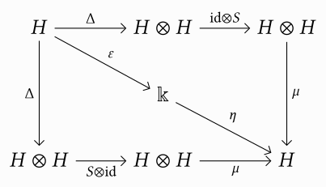
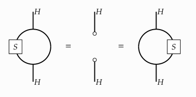

Posted on 2024-10-27 · last modified: 2024-10-28 · 89 min read · BQN
I did all of Advent of Code 2017 in bqn so you don’t have to.
Let me tell you about that in as few as 20’000 words.
The second part will then freely refer to
That last one probably already needs explanation.
First, multiplication is
A block is something in between curly braces,
containing several assignments and expressions separated by line breaks, or, alternatively, the
I will talk a little bit more about namespaces later,
but let’s not get too hung up on that right now.
Instead, let’s talk about functions.
A user-defined function is something in curly braces that mentions the special names
I should note that the
The signum function hints at a fundamental design decision that basically all array languages share:
instead of a name,
all builtin functions are given a unique symbol.
However, the documentation of each of them does mention a pronounceable name as well,
so that it’s easier to talk to other people about a given piece of code.
In particular, the above examples showcase how bqn displays vectors (or lists) and arrays.
Definitionally, vectors are “rank 1 arrays”—we will talk about what exactly this means when we talk about major cells.
Here’s another example of monadic and dyadic uses of functions:
This takes some time getting used to.
However, after a while you really start to think that
notation as a tool for thought
has a point.
Besides this being quite a lot to take in,
you might have already noticed something strange in the last example:
how come
Reading the input line-by-line and converting it to a vector works via the builtin
The last example shows another important feature of pretty much all array oriented languages:
scalar pervasion.
Simply put, arithmetic functions like
After the input is parsed, the solution is not so complicated:
We rotate (
All that’s left is to sum up the numbers by using
+-fold (
Part two is basically the same, only a number doesn’t consider its first successor, but the one that’s exactly halfway around the list. Adjusting for this just means that we have to adjust how much we shift before comparing:
Even in this simple example,
one can already see what goes into writing code in this language:
aim for branchless, array-based, solutions rather than iterating through elements.
However, if you ever miss
For part one we have to calculate the smallest and largest values of all rows in the table.
This is easy enough once we have the data in a usable format;
however, getting to that format is actually the much more interesting part of the day.
For one, we have to learn how to split strings!
For these kinds of partitioning tasks, bqn sports the very general
group (
both
Now, a
+-scan (
This looks a bit weird, but the
One thing we can do,
since
Now we can’t differentiate between the separators and our first word!
However, there is an easy fix for this;
we just take the original
And that’s it!
If you wanted to make it unreadable (see the bit on trains below), you could also write it as
We can bind that to a function
The input separates each number by a tab,
so we just need
Because both
…except that this solution uses two new concepts that we haven’t seen before:
multidimensional arrays, and tacit programming!
is an array of rank
This is an array of rank
Replace
For example, suppose we wanted to write a function that takes two arrays
Let’s now write the function with and without trains:
That last example used the
atop (
The
Playing around with this was immensely helpful for me in the beginning.
The 1-modifier
each (
Part two asks a bit of a different question: instead of the smallest and largest number in each row, we instead need to find the two (unique) numbers such that one evenly divides the other, and take the result of that division. I didn’t think too hard about this and just decided to brute-force a solution. The idea is to proceed row-wise and first create a division table for each row with
As the problem explicitly says,
there will be exactly one pair of different numbers where one evenly divides the other.
As such, we just need to select an integer—e.g., some number that’s equal to its floor—that is not one:
As before, selection is done with
Part one is all about calculating the
Manhattan distance
I found no good array solution for this,
so I just stared hard at the spiral until noticing the general pattern in which we are moving:
We create the
The train
Then, since we actually want a nested vector instead of a rank two array,
enclosing (
Walking around the grid can now be simulated by summing up every individual move.
Scanning over the array keeps all intermediate steps,
which is useful since we are looking for a specific index:
All that’s left is to pick the right coordinate
(keeping in mind we skip the starting position),
and calculate the Manhattan distance.
The
Part two modifies how the spiral is constructed. Instead of just being the ascending natural numbers, a more elaborate iterative process is given: for every number, sum up the values of all the neighbours of a cell at the time of its creation. With an initial seed of
Our task is to find the first number that’s bigger than our input.
Again, no array-oriented solution presented itself to me,
so I just did the obvious thing: for the point under consideration,
generate a list of all neighbours,
see whether they appear in the grid already,
sum the values of those that do,
and associate the point with that value in the grid.
In this case, “grid” actually means hash map—yup, we have those.
bqn exposes a simple interface under the
We first calculate all of the neighbours of a given point,
represented as a vector with two elements.
The
The colon ends the header, and begins the body of the block.
The
This example already highlights a few more features—and shortcomings—of blocks.
First, a block can contain multiple bodies, separated by
The rest of
Let’s get to simulating!
We smuggle a bit of control flow into
Part one wants us to calculate how many passphrases do not contain duplicate words.
bqn essentially gives us everything we need for this: we
sort (
Easy.
Part two slightly expands on this; instead of being unique, words in a passphrase now only have to be unique up to permutation. This means that no word may be the anagram of another word. Solving this only requires a small adjustment to the above solution, in that we now have to sort every word before using mark firsts:
The actually interesting bit about this day was how to combine these two solutions,
which involved writing my first real 1-modifier:
The function
Honestly, I find this system super interesting,
and quite expressive.
It might be a bit confusing at first,
so I would encourage the reader who made it this far to peruse bqn’s entire
expression syntax article.
We can supply a function to
After having jumped, the number at the last instruction is increased by one.
For part one we have to find out when we would exit the vector.
There is no real algorithm to speak of here, so we can just verbatim do what the instructions ask of us:
There are nevertheless a few interesting things about the solution:
With that done, we have part two waiting for us. Now, how an instruction changes after we jumped depends on its value: if it’s three or more, we decrease it by one; otherwise, we proceed as before and increase it by one.
This is another neat example of how to use Boolean expressions for control flow:
depending on the result of
Notice in particular that the redistribution starts by “emptying” the bank with the highest value,
so
The only interesting part of the solution is, I guess,
the encoding of the redistribution.
The basic idea is to take a number
Fill elements are basically certain “default” values of a given array. Operations on the array might make use of them if the array would otherwise end up having holes in it. Atomically, they are either
This is also how things like nudge decide what to pad the array with.
Reshaping may also use a fill element, if the dimensions of the reshape are not exactly divisible by the shape of the original array:
To keep track of the already seen configurations,
we could again use a hash map as in day 3.
However, the number of configurations isn’t actually that large, so a normal list suffices.
Appropriately generalising the above construction nets us the result for part one:
Part two is just a slight variation on this idea: we now also have to calculate the exact cycle length. Since
Notice how we need to enclose
More visually, such a tree can be written as
Part one asks us for the root node.
Parsing is a bit ad-hoc, but not all that complicated:
for a single line of the form
The
Recall the “not-in” idiom
Part two now makes use of the weights, which we haven’t at all needed so far. Our goal is to balance the tower of programs, so that the children of every node sum up to the same value. For example, given the input
for the root,
This looks like a lot of code, but the underlying recursive algorithm is not so complicated:
The instructions are given in a pretty rigid form;
abstractly, one has something like
where
Pretty neat, huh?
The plan is clear: transform every line into its equivalent bqn code,
and evaluate everything with
Now we can replace every element with its bqn equivalent.
This can be conveniently done with the
choose (
In this specific example, for each string in
Let’s get to simulating!
As I said before,
Part two instead asks us for the largest value that is ever held in any register during the execution of the program. This introduces some notational, if not conceptual, difficulties—but nothing we can’t manage! Simply introduce an additional register that contains this information, and update it after every “normal” instruction.
It works, I guess.
Some of the invariants are packed inside of one clause;
e.g., the line
adds one to the depth only if the character is not ignored
(
Part two asks us to find all non-cancelled characters hiding within the garbage. There are some special rules in that we don’t want to count the enclosing
Rather bravely, the problem… just gives us the instructions on how to do this with a flat list.
Simulating one round works as described above.
The only thing we have to keep in mind is that indexing has to be circular.
Due to the fantastic under 2-modifier, this is all pretty ergonomic.
Part two now wants us to implement the whole hashing algorithm. Here’s essentially what we have to do:
Since bqn does not have any format strings,
one has to implement base conversions from scratch.
Here is one from decimal to hexadecimal, specialised to one byte—always two characters, padded with
Finally, we get to xoring!
One thing that bit me here is that bqn does not support bit operations on unsigned types, only signed and float.
As such, even though all of the numbers are 8-bit unsigned integers, we have to operate on 16-bit signed integers instead.
Enlist
(
I think the
Part one asks us to follow our input—which is a string of instructions where to walk, like
The Manhattan distance in this encoding is just the sum of the two coordinates.
We immediately translate each direction into a coordinate using a combination of find
(
Part two is a slight variation of this idea: what is the furthest away we have ever been during this process? This just means that, instead of a fold over the list, we use a scan and take the maximum distance.
Parsing this is not terribly difficult:
We first split each line on spaces, and then
Now, the above snippet does not work at all, because obviously the list does not have to be in order.
Consider
Calling
the rest is just some icing on top.
The parse tree for this does not look so bad:
Thus, fully parenthesised and without after, it looks like
at which point even a simpleton like me may guess that it will execute something like
Fully parenthesised this is
In particular, notice how we already understand almost all of this modifier!
The
So if
Equipped with
Because we fold over the same list every time,
we can glue it to the right side of the function using after.
Part two tasks us with finding all of the connected components of the graph, instead of just the one containing
Now, we can successively obtain a single connected component, and delete it from the graph.
Since the graph is undirected, this just means looking for the nodes in our list.
For iteration,
The result of
one can visualise the firewall like this:
In each layer, there is a scanner starting at the top.
Every tick, it moves one layer down, bouncing off the bottom and coming up again.
We start in an imagined layer
You get the idea.
For every layer of size ,
the question whether the probe is caught in step is equivalent to ,
where we need to subtract due to the bouncing off mechanic.
To get the score of a collision, multiply and together.
We can just verbatim copy this to bqn.
Part two wants us to not get caught; however, the only thing we can control is our starting time. This would be a pretty cool problem if it were not brute forcable. Alas, it is.
The algorithm is the same as above,
only that we now have an additional delay to factor into the equation.
We iterate until we find a delay
To get the grid representation, we first need to rewrite our solution for day 10,
and export a function to compute the knot hash of the given argument.
Nothing too unusual here,
only that exporting from a namespace works by binding with export
(
and translate the recipe above into bqn code.
Not too many new things here.
We need to convert the matrix into a vector first, because fold only works on vectors.
Alternatively, we could have also summed up all major cells separately with insert
(
Part two is more interesting, and is probably among the top three parts for me in terms of fun. Instead of simply counting the number of alive cells, we now need to find the number of distinct regions—live cells adjacent to each other in any of the four cardinal directions. For example, the grid shown above would have the following regions
So, what do we do?
This question reminds me a little bit of a game of life–type situation,
only that we don’t have to evolve the grid.
Starting with
the first step is to associate a unique number with each
If we now multiply with the original matrix,
all of the zeros will kill the redundant numbers in that representation.
Packing this up into its own function,
a clever user of under takes care of all of the de- and reshaping for us.
Now, the idea is to proceed in the following way:
take the maximum of every cell with its four neighbours—to get group the cell should belong to if it’s alive—and then multiply by the original value of the cell, to again make sure we only care about live cells.
Now, because bqn is an array language, we can do all of this for the whole array at the same time!
We can use nudge in either direction to get the North and South neighbour (remember that first axis stuff?),
and nudge cells to get the East and West one:
There are a few things going on here.
First, we use bqn’s
functional programming capabilities,
which work just about as one would expect.
For kicking out the zeros we have to use
signum (
To get the number of regions,
we just have to pull everything together—and remember to subtract one, for
The rest is similarly straightforward.
One could drop down to bit-wise operations again,
but the lowest 16 bits of and matching up is equivalent to ;
let’s do that instead.
We use over
(
Part two asks us to change up the algorithm, so that generator A only considers multiples of 4, and generator B only cares about multiples of 8. That is, both generators independently generate numbers until these conditions are met, and only then are these numbers compared. We also only have to check 5 million pairs, instead of the 40 million of part one. First and foremost, this means that we have to decouple the comparison aspect from the generation of the numbers.
The calculations are the same as in part one, only now we use change to build a list that we can return.
Luckily, simply generating 40 million pairs as above and filtering for the right properties works out for us here.
The valid moves are:
Parsing the moves is not terribly complicated.
The cool thing is that we can use bqn’s functional programming facilities again
and immediately translate the instructions above into functions to be applied!
Since the format of the instructions is so predictable,
we can just match on the first character and decide where to go from there.
Also, the
With all of that in place,
we can successively apply all the functions to the seed value
Part two asks us to keep the result of part one,
I used a hash map here since I figured the loop was still going to be substantial
(it wasn’t—oh well).
The test function supplied to while
Part one asks us for the value after 2017 in the final buffer.
With a puzzle input of and a position in step ,
the stepping forward process is just —the list is exactly of length in that step—and inserting after the element means adding one.
As such, a straightforward solution for part one looks like this:
However, this feel immensely unsatisfactory to me.
Repeatedly breaking apart an array and assembling it again (
The final result,
Part two now wants us to identify the value following
As such, the default argument in a scan is given as the initial left argument,
instead of the initial right one as in a fold:
The reason this is done is more of a pragmatic one,
from what I can tell:
left scans are simply more common than right ones.
One may argue the same for left over right folds, actually,
but I suppose the æsthetics of having
Other than that, the train
Part one asks us what value is recovered the first time an
Note the
Simulating an instruction is easy—if verbose—for the most part;
the only slight challenge is that we have instructions along the lines of
The registers
Finally, here is the rest of the simulation.
Quite a lot of code!
Part two informs us that we actually completely misunderstood the instructions. In reality, the assembly is about simulating a concurrent system comprising of program
Now all we have to do is take a deep breath and write the following code.
The question lets us know that there will be a unique line connected to the top,
which is our starting point.
This in particular means that we will start out going down.
Letters are simply passed through, and the path we can take is always unique;
we only change directions when absolutely necessary.
Part one asks what letters we see in order.
This is a straightforward simulation, so let’s get to it;
first, parsing and massaging the input:
We pad the input matrix with spaces on the right, bottom, and left, in order to make changing directions easier.
This way, we only have to check if the next cell is a space character;
since we never move into that space, we don’t have to special case indexing around the edges of the array.
The
When padding the input,
we essentially want to rotate the matrix by 90 degrees three times,
and add spaces afterwards.
It is well known that every rotation is merely the product of two reflections,
like
reverse (
Depending on whether we rotate or transpose first,
we turn either right or left.
Doing this four times gives us every rotation of the matrix:
Padding all of the sides can be done during this rotation
by just adding the elements with which to pad in the right quantity (the number of major cells) to every side:
Changing direction involves picking the unique (per the question) next direction to go in.
In particular, we never want to turn around.
Notice how the result of
We just continue going into the same direction until the next cell would be a space.
In that case, we correct and move on until we can’t move anymore.
As said above, the start is the unique
Part two is short and sweet—probably a breather from yesterday—and asks us for the length of the path.
Part one asks us the following, slightly handwavy, question.
Very dirty!
We first filter every line, only keeping the important bits for processing,
and then parse the whole thing as a list.
Now, “in the long term” is a bit of a flexible formulation,
but what the question essentially wants us to recognise is that a higher acceleration always wins—doesn’t matter how fast the other particle started.
In particular, if we want to find out which particle will stay closest to the origin,
we need to find the one that has the smallest acceleration.
I will discuss two ways of doing this, each slightly flawed in its own way.
First, my input has the neat property that there is a unique particle with a smallest total acceleration.
In such cases, part one just amounts to picking that.
Get the absolute value of each position after 1000 steps,
and then compute the minimum as before.
Part two wants us to take care of “colliding” particles—those whose positions match up at any point in time. Since I’m not going to solve quadratic equations, let’s also just simulate this one “long enough”.
We advance every particle in the input by one,
sort the resulting list by position,
and kick out all particles that are equal to any adjacent ones.
The
First, one could write that piece of code in a slightly different—perhaps more understandable—way:
This very symmetrical looking expression checks which elements in a given vector
are unequal to their successor and predecessor:
The first thing to notice is that, in a sorted list,
a number not being equal to its predecessor just means that it’s the first occurrence of that number in the vector:
The more interesting questions is how to capture that a number is not equal to its successor.
For that, one can still use mark firsts and then simply rotate the vector by one to the left.
This will instead give you the last occurrence of every element in the vector.
Thus, to get the unique elements of our sorted list,
The task says to apply the following two simple rules over and over again.
Note that regardless of how the match is formed, the output pattern is never rotated or flipped.
Beginning with the above starting configuration and applying enhancement rule
Applying rule
and so on.
Part one asks us to simulate the whole thing five times,
and determine how many
This isn’t too surprising; we first essentially split on
Since all rotations and flips are valid for the pattern match,
we might as well immediately “expand” each of the substitutions into all eight possibilities.
This essentially boils down to applying every transformation of the
dihedral group
of the square to our array.
One way to do this is to compute all of the rotations,
and all of the rotations with reversed rows.
We already saw that we can use
We now just have to do some plumbing to associate every one of the resulting eight input patterns to the same output.
Now, as you can imagine by either thinking about or looking at the output,
there are usually a lot of duplicates in this list.
We can fix this by using
deduplicate (
Next up is enhancing the grid as described.
Let’s do this generically:
given an array, a target
Group is used to partition the grid into the necessary
We can then use the fact that the left argument to group can be a nested vector,
where each element corresponds to one axis of the right argument;
see multidimensional grouping.
For the simple partition that we want, doubling the vector suffices.
The rest of the code is kind of straightforward;
in
When plugging everything together we just need to make sure to pass the right substitutions to
Part two asks us to instead simulate 18 enhancement steps.
The virus starts square in the middle, looking up.
Part one has two types of cells, clean (
Note the unusual coordinates:
since I don’t want to change the “direction” in the array itself,
up, right, down, and left are
The simulation now just does what the rules say.
Since we want to turn left when we see a clean cell,
we have to have a substitution like
Part two wants us to simulate the same thing, but instead of two we now have four states to keep track of: clean, weakened, infected, and flagged—in that order. We also have to simulate everything for 10’000’000 instead of only 10’000 steps, and the rules are a bit different:
Some bits of additional state, like the modulus used or which number we want to count in the end, are needed.
Other than that, though, it’s the same function as before.
Oh yeah.
So what’s that all about? Well, originally the code looked very different—almost an exact copy-paste of what we did for day 18—but part two reveals what the task actually wants us to do.
We start at
This creates a nested vector like
For each of these starting states, we can formulate a naturally recursive algorithm:
given a target value
We use our old friend
We sort the starting values for easier pattern matching,
and then just have to take some extra care of actually removing it from the list.
Part two wants us to get the strongest bridge only amongst those that are longest overall. For example, given the bridges
Instead of just the current strength, we also keep track of the depth.
The maximum thus has to prefer the first index of that tuple to the second one.
Thankfully, the default
sort down (
Some additional information,
like the starting state and the number of iterations we should simulate the machine for,
is also given.
Frankly, on the last day I have no intention of doing a bunch of parsing in a language which is, in my opinion, not at all suited for that kind of task.
Since the transition function is small enough, however, we can do what we did two days ago and just… inspect the input.
The tape is just a hash map that only keeps track of the non-zero entries.
Each of the states is a separate function that takes the current index and the value at that index,
and gives back the next index and state.
To solve part one, we just have to simulate this for the appropriate amount of time and then count the number of ones still on the tape.
There is probably a more array-oriented solution to this:
the transition function of this Turing machine is something like
where and .
In particular,
for any of the 12 possible inputs, one obtains a single 3-tuple as an output.
This means that one should be able to use an array of shape
As every year, part two is a freebie if one has completed all of the puzzles up until now, as it asks for the 49 stars collected so far to reboot the printer. Nice.
The setup§
Advent of Code is a yearly puzzle-coding-challenge-thing, in which one has to solve two riddles every day from the 1st until the 25th of December, with the second part of each puzzle being unknown until one solves the first one. I’ve found it to be a great way to learn the basics of a language—how it “feels”. The puzzles are accompanied by an endearing—and at times pretty funny—story. I will, however, leave out most of it for this post, as I feel like it would distract too much from the point I’m trying to make.Conventions throughout the article§
One thing I will not leave out is the full solution for every day. Normally this would result in a rather large amount of code having to be shown for the later days, but bqn’s terseness saves us here: excluding comments and empty lines, all days combined are just under 300 lines of code! I will be a tiny bit economical with the different parts, though; think of every heading as introducing its own namespace. For example, in the code block solving the first part of every day I will generally include parsing the input.inp ← …
# Hypothetical solution for first part
inp - 1
inp without me having to define it again.
# Second part
inp + 1
Who reads all of this anyways?§
A surprisingly hard question is who this article is for. Someone new to Advent of Code, but familiar with bqn? The other way around? New to both? Familiar with both? The answer—as is so often the case—is that I don’t know. Realistically, I’m actually talking to my present and future self here—writing about things is a great way to solidify understanding—so the article will be structured accordingly: I will talk about bqn’s core concepts and language features, but put the more dreary parts of that exposition in collapsible boxes, for people who either already know, or don’t care. Keep in mind that I started solving these puzzles to learn the language. Further, bqn is my very first array programming language,I flirted with apl for about a week before picking up bqn,
but the dialect that everyone seems to use is Dyalog apl,
and I didn’t have the guts to commit to a proprietary language implementation.
so my understanding of a lot of concepts is still quite shallow.
The official documentation is really quite good, so I will link to it a lot.
As mentioned, the tangents in which I talk about language features are more for my own understanding.
Still, perhaps they are useful in case someone who does not know bqn has somehow found their way here,
and didn’t run away after seeing the Unicode characters.
As such, the focus of this post should be on how I—as a total newcomer to this kind of thing—approach solving problems in such an unusual language;
what works and what doesn’t, that kind of thing.
In short, I want to impart the vibe of the language to the reader—and that aoc is actually a lot of fun!This sentence is also true for the axiom of choice;
jokes on you, constructivists!
Acknowledgements§
I want to explicitly thank the super welcoming community that this language has! Next to fantastic sites such as bqncrate—a great way to pick up on idiomatic ways to write certain things—there is a #bqn:matrix.org matrix room, which is part of the larger #array:matrix.org space. Someone knowledgeable is always there to answer your stupid questions. Special thank to Marshall Lochbaum (the creator of the language!), dzaima, and brian_e. Without them a lot of solutions presented here would be even uglier than they already are. A separate big thanks goes out to dzaima (again!) for sending me lots of code improvements and suggestions for this post.A crash course on syntax§
Here is an entirely too short crash course on the syntax of the language, with a bit of semantics sprinkled in here and there. Throughout, I will present most examples in a repl-esque fashion; input is indented by 4 spaces, and output is flush to the left. Line comments in bqn start with#.
1+4+6 # Everything normal so far…
11
2×4+6 # …but actually not!
20
×, instead of * as in most other languages.
More importantly, however: there is no precedence for mathematical operators!
bqn is evaluated (strictly) from right to left,
and most of the time this is also the direction you should read expressions in.
Assigning values to variables works with define (←):
v ← 2×4+6
20
⋄ character.
Further, a block starts its own namespace;
nothing all that surprising coming from almost any other language.
v ← 2×4+6
20
{v←0 ⋄ v}
0
v
20
𝕨 and 𝕩,
standing in for the left and right argument to it.Depending on your font,
Functions are always infix, and can only be called with either one or two arguments.
In the former case, the function takes its argument on the right and 𝕨 and 𝕩 might not look so different from w and x:
the former really are the blackboard bold variants of the respective letters.𝕨 will be given a special value:
nothing (·)!.
1 {𝕨+𝕩} 2
3
1 {𝕨-𝕩} 2
¯1
2 {𝕨⋆𝕩} 8 # Careful: exponentiation!
256
{√𝕩} 9 # Could also just write √9
3
⋆ above is the Unicode code point 0x22C6 (STAR OPERATOR),
and not just a normal asterisk.
Because Greek is much cooler than Latin,
bqn calls functions taking one argument monadic,No relation.
and ones taking two arguments dyadic.
When in doubt, just substitute “unary” and “binary” in your head.
One thing that might seem very confusing at the start is that
many functions are actually overloaded depending on whether they are called monadically or dyadically—often with seemingly unrelated (or only barely so) functions!
# Dyadic ×; N.b. we use the upper minus ¯ here because ¯2 is its own
# number literal. We could also use the function -, but then (because
# remember everything is evaluated right to left) we would have to
# use parentheses: (-2)×4. Otherwise, the expression would be parsed
# as -(2×4).
¯2×4
¯8
ׯ2 # Monadic × is the signum function!
¯1
×2
1
×0
0
↕9 # Monadic ↕: Range. Gives you the integer range [0, 𝕩-1].
⟨ 0 1 2 3 4 5 6 7 8 ⟩
7↕(↕9) # Dyadic ↕: Windows. Create all windows of size 𝕨 in 𝕩.
# N.b: the parentheses are not technically needed.
┌─
╵ 0 1 2 3 4 5 6
1 2 3 4 5 6 7
2 3 4 5 6 7 8
┘
Perhaps it is unwise to postpone actually talking about arrays in an array language,
but I feel like if this gets even longer I will lose the one reader who gets this far.
We can define our own arrays in a few different ways,
the two most important ones being
⟨1,2,3,4⟩ # Using list notation
⟨ 1 2 3 4 ⟩
1‿2‿3‿4 # Using strand notation
⟨ 1 2 3 4 ⟩
r←↕9
⟨ 0 1 2 3 4 5 6 7 8 ⟩
⌽r # Monadic ⌽: Reverse.
⟨ 8 7 6 5 4 3 2 1 0 ⟩
3⌽r # Dyadic ⌽: Rotate. Rotates 𝕩 by 𝕨 places to the
# left (to the right if 𝕨 is negative).
⟨ 3 4 5 6 7 8 0 1 2 ⟩
Beyond the headline that is;
the fact that notation influences one’s thoughts seems obviously true to me.
Please indulge me for a second (or don’t and go back to the main text) and let me derail this post about bqn with maths.
There is an abundance of different notations one might use to talk about Hopf-ish objects in monoidal categories.
Don’t worry about actually understanding the maths, btw, just look at the notation.
Suppose we have maps
, , , and , for .
Assume that this map satisfies
First of all, notice how there are already lots of notational decisions that could have been written up differently!
One might omit all of the ’s, and just write ,
or highlight the symmetry between two of the maps and write instead of .
Even more extreme, however, are the following alternative ways of writing the same equation.
One might also express it
I believe bqn’s creator once called the syntax “scribbles on a whiteboard”, and honestly that’s my feeling about it too—with the slight addendum that blackboards are obviously vastly superior to whiteboards.
One more piece of syntax that we have to discuss before diving into day 1: modifiers.
These are things that take either one or two functions, and spit out a new, modified, one.
I would imagine that this comes from the apl tradition and is actually not strictly needed,
given that bqn supports higher order functions.
However, since these things have their own precedence and binding rules, the separate concept may nonetheless be useful.
We can write our own modifiers by using - in Sweedler notation by
- with commutative diagrams:  and
- with string diagrams: 
𝔽 and 𝔾 inside of a block,
but for most of this article we will only use the builtin ones.
Monadic modifiers take their function argument to the left,
and are not called monadic any longer,
but 1-modifiers.
Likewise, modifiers taking two functions are called 2-modifiers.
1 - 3 # Normal subtraction
¯2
1 -˜ 3 # ˜ is the *flip* or *swap* 1-modifier:
# it takes a dyadic function and returns
# one with its arguments flipped.
2
3 - 1
2
-˜ 3 # If a flipped function is called with
# only one argument, it gets duplicated.
0
3 - 3
0
{𝕩+1}∘{𝕩-3} 4 # ∘ is the function composition 2-modifier called *atop*.
# Called monatically, 𝔽∘𝔾 𝕩 is just 𝔽𝔾𝕩
2
1 {𝕩+1}∘{𝕩-𝕨} 4 # Called dyadically, 𝕨 𝔽∘𝔾 𝕩 transforms to 𝔽(𝕨𝔾𝕩)
4
1 +⟜1∘- 4 # ⟜ is *after*: 𝔽⟜𝔾 𝕩 evaluates to 𝕩𝔽(𝔾𝕩).
# If a constant or variable is given as 𝔽 or 𝔾,
# it is promoted to its constant function.
# The whole expression associates as 1 (+⟜1)∘- 4,
# and so evaluates to (+⟜1) (1-4) = (1-4)+1.
¯2
+⟜1∘- is parsed like (+⟜1)∘- when I previously said everything is evaluated right to left?
While there are no precedence rules among functions or among modifiers,
the latter does bind tighter than the former.
Additionally, modifiers associate left to right, instead of right to left:
given functions F, G, and H, then F∘G∘H is parsed as (F∘G)∘H instead of F∘(G∘H).
As you can imagine, getting used to reading bqn expressions takes quite some time.
It gets better, though, I promise.
Something to ease the pain:
there is a purely syntactic way to decide whether a given symbol is a (builtin) function, 1-, or 2-modifier!This is actually also true for the respective user-defined analogues,
but let’s talk about that later.
Thankfully, someone thought about this, and there is a consistent morphology to the chosen symbols:
- 1-modifiers are always superscripts;
- 2-modifiers always contain an unbroken circle; and
- everything else is a function.
× + - ⋆ ⌽ ⍉ ⊔ ≢ are functions (remember the unbroken part),
˘ ¨ ⁼ ´ are 1-modifiers,
and ∘ ⍟ ⚇ ◶ ⌾ are 2-modifiers.
Quite neat, I think.
This should be plenty to get a feeling for the language.
Anything more will be introduced as needed.The grouping of days is mostly done so the toc doesn’t completely explode,
while retaining some sort of directional aid.
In either case, it’s probably fastest to just
C-f for the respective day.Days 1–5§
Day 1§
Let’s get into the swing of things! Day 1 starts with us getting sucked into Santa’s computer, where we have to solve a captcha, proving we’re not human. For part one, we are given a (circular) list of numbers, and are asked to identify repeating digits, starting from the beginning (i.e., all digits that match the next element). For example, in311223 this would be 1, 2, and 3 (in that order).
Our input is a long string of digits
that we first have to convert to a long string of numbers:
inp ← '0'-˜ ⊑ •FLines"../inputs/day01.txt"
•FLines function.The
The only other function we haven’t see so far is
first • is not a separate function, but really part of the name •FLines.
All names starting with that symbol are [system values]—things provided by the bqn interpreter that are not the builtin primitives.
We will see other important system values, like •HashMap or •Type, a bit later.⊑,
which gives us the first element in the list—our input is on a single long line.
Much more interesting is the '0'-˜ part,
which immediately gives me a chance to talk about character–number conversions in bqn.
Affine characters in bqn
The documentation says that characters form an affine space; this is not technically true, but a good guide on what kinds of operations we have access to:There are many definitions of affine space, here is a simple one:
an affine space comprises a set and a vector space ,
such that the underlying abelian group of acts freely and transitively on .
In our specific case, would be the set of “numeric Unicode codepoints”,
and is the field of “numbers”.
The latter is where this falls quite flat;
even leaving aside all the “floating points are evil” rhetoric,
we can actually only act on a character with an integer.
Now, ℤ is just a ring, not a field, and has no hope of being a vector space over any field.
Rather, one should talk about characters forming an affine module over ℤ,
which would at least be a bit more formal.
I swear I will stop with the maths at some point.
-
(+) : Num → Char → Char, adding a number to a character gives a character:97+@ # @ is the literal "null" character; # i.e., '\0' in most other languages. 'a'
-
(-) : Char → Num → Char, subtracting a number from a character gives a character:'a'-32 'A'
-
(-) : Char → Char → Num, subtracting two characters gives a number:'a'-@ 97 '0'-@ 48 'a'-'0' 49
'0' from them!
'9'-'0'
9
"1939102"-'0'
⟨ 1 9 3 9 1 0 2 ⟩
- know how to “penetrate” arrays,
in that they apply to each element individually, instead of to the whole thing as one.
In this case, the scalar '0' is “duplicated” and supplied to all elements of the string "1939102".
All whitespace here, and indeed in most places, is completely redundant.
I choose to still include it, to “logically group” certain operations.
It helps me with reading the code, anyways.
+´ inp/˜ inp= ¯1⌽inp
⌽)
the whole list by 1 to the right,
and then compare it with its original (inp= -1⌽inp).
This creates a Boolean mask: a list with the same length as inp, only consisting of zeros and ones.
We can use this to pick the elements of the list corresponding to 1 with
replicate (/).
# "Only give me the elements of 𝕩
# that correspond to 1's in 𝕨".
⟨1,1,0,1,1,0⟩ / ↕6
⟨ 0 1 3 4 ⟩
`),
which is just a right fold over the list.
A few more notes:
- Boolean masks are an important concept to internalise, and will often be used to filter results, or serve as control flow—bqn does not have a builtin if-then-else expression!
-
Swap (
˜), as seen in the crash course on syntax makes an appearance again. Recall that this 1-modifier simply takes a function, and returns a function with its arguments flipped, soX f˜ Yis the same asY f X. When given only one argument, swap becomes self and duplicates its argument:f˜ YisY f Y. The modifier mostly exists to allow the reading order to flow more naturally from right to left. Without it, we would have to write the above expression as+´(inp=-1⌽inp)/inp.Or, if you wanted to make it extra confusing, as+´⊢/⊢=¯1⊸⌽, but we’ll get to that later on.
Part two is basically the same, only a number doesn’t consider its first successor, but the one that’s exactly halfway around the list. Adjusting for this just means that we have to adjust how much we shift before comparing:
+´ inp/˜ inp= (¯2÷˜≠inp)⌽inp
if-then-else or while constructs,
you can make your own.
Day 2§
Today we have to help some programs repair a corrupted spreadsheet. Our puzzle input is a table of numbers, like so:5 9 2 8
9 4 7 3
3 8 6 5
⊔)
function.
Briefly, X⊔Y groups Y according to the indices supplied by X,
while omitting elements that are associated to ¯1.
For example, in
1‿0‿¯1‿1 ⊔ "abcd"
⟨ "b" "ad" ⟩
a and d are associated to the same index, 1, so they are grouped together;
b is alone (and in front of a and d because it is associated to index 0);
and c is omitted.
The strategy is, then, to somehow associate ¯1 to the separator in the input, and have all digits of a number be associated to the same index.
If you want you can black box that such a Split function exists;
if not, feel free to peruse the insert below.
The long and painful walkthrough
We start by checking which elements of the given string match the separator, and call itws.
I will use a string with a space separator for illustrative purposes, but the function itself is really quite general.
' ' { ws←𝕨=𝕩 } "13 259 39999 4"
⟨ 0 0 1 0 0 0 1 0 0 0 0 0 1 0 ⟩
`)
yields a running sum, indicating when we encounter a separator.
' ' { +`ws←𝕨=𝕩 } "13 259 39999 4"
⟨ 1 1 2 2 2 2 3 3 3 3 3 3 4 4 ⟩
ws←𝕨=𝕩 is an inline assignment—we do the comparison 𝕨=𝕩, call the result ws, and then scan over it.
In this way, we can refer to ws again at a later point.
It’s not the best style to write code this way, but here it kind of fits.
If we just grouped the string now, we
would get the separators “attached” to the word that follows them:
' ' { 𝕩⊔˜+`ws←𝕨=𝕩 } "13 259 39999 4"
⟨ "13" " 259" " 39999" " 4" ⟩
ws gives us the positions of the separators,
is to
negate (¬)
the entire vector and multiply it with what we already have.
This would turn all separators into zeros in the output:
' ' { (¬ws)×+`ws←𝕨=𝕩 } "13 259 39999 4"
⟨ 0 0 0 1 1 1 0 2 2 2 2 2 0 3 ⟩
ws, which—remember—contains the positions of the separators,
and subtract it from the result that we have:
' ' { ws-˜(¬ws)×+`ws←𝕨=𝕩 } "13 259 39999 4"
⟨ 0 0 ¯1 1 1 1 ¯1 2 2 2 2 2 ¯1 3 ⟩
' ' { 𝕩⊔˜ws-˜(¬ws)×+`ws←𝕨=𝕩 } "13 259 39999 4"
⟨ "13" "259" "39999" "4" ⟩
' ' ((⊢-˜¬×+`)∘=⊔⊢) "13 259 39999 4"
⟨ "13" "259" "39999" "4" ⟩
Split and be on our way!Note that the actual implementation of
which is subtly different in its behaviour.
I leave it as an exercise for the reader—or my future self—to figure out how exactly this version differs to the one I just explained,
and what problem it fixes.
Split I’m using is
Split ⇐ (¬-˜⊢×·+`»⊸>)∘≠⊔⊢
'\t' Split input, right?
Wrong!
bqn’s characters and strings are almost completely void of any kind of escaping mechanism.
That is to say, besides for double quotes, which are inserted by duplicating them,
every character entered into a string it interpreted verbatim.
Indeed, '\t' is not even a valid character,
as it actually comprises two characters: '\' and 't'!
To write a tab we either need to actually insert a tab character,E.g., Emacs supports this by means of
or make use of the “affine” part of affine characters:
quoted-insert (C-q). ' '
' '
@+9
' '
Split and tab←@+9 will be needed quite a few times this year,
let’s put it into a small utility file.
We can use bqn’s system function •Import to import a namespace—which I don’t want to get into right now, but it works as one would expect—from somewhere.
Parsing the input and solving part one is straightforward:
⟨Split, tab⟩ ← •Import "../../util/bqn_util/util.bqn"
inp ← >(•ParseFloat¨ tab⊸Split)¨ •FLines "../inputs/day02.txt"
+´ (⌈´-⌊´)˘ inp
Arrays
The fateful day has come that we need to talk about arrays in this array language. I will probably not do this topic justice here, so have a link to the bqn array docs. For now, let’s look at an array as a blob with the following properties:- It has a rank, which is its number of axes. Pictorially, it is the number of dimensions one can walk in. The leading axis is the first one.
- It has a shape, which is the number of positions that it has along each of its axes.
- It has elements, which are the values at every position.
=
and the shape with monadic
≢.
For example,
10+↕9
⟨ 10 11 12 13 14 15 16 17 18 ⟩
1 with shape ⟨9⟩.
At every possible position (0–9), we find a corresponding element: 10 for 0, 11 for 1, etc.
We can use reshape to create a higher-dimensional array from a flat vector:
3‿3⥊↕9
┌─
╵ 0 1 2
3 4 5
6 7 8
┘
2 with shape ⟨3 3⟩.
The element at position 1‿1 (notice how we have two indices to specify) is 4.
Why am I blabbering on about this when everyone intuitively knows what an array is?
Because this is really important:
arrays are an intrinsic concept.
Many things that seem intuitive at first,
coming from another language, are just not true in bqn.
-
Lists of lists are not equivalent to higher-dimensional arrays:
a ← ⟨⟨1,2⟩,⟨3,4⟩⟩ ⟨ ⟨ 1 2 ⟩ ⟨ 3 4 ⟩ ⟩ b ← >a # monadic > is called *merge* # and creates an array from a list ┌─ ╵ 1 2 3 4 ┘ b≡a 0
-
Piggybacking off of that: “depth is not rank”.
The type of the elements is not at all important in determining the arrays rank.
=1‿2‿3‿4‿5 # vector 1 =3‿3⥊↕9 # matrix 2 m←1‿(3‿4)‿(2‿2⥊↕4) # Nested array ┌─ · 1 ⟨ 3 4 ⟩ ┌─ ╵ 0 1 2 3 ┘ ┘ =m # The rank of the elements does # *not* affect the rank of the array. 1
n is a cell of rank n-1 that leaves out the leading axis.
For example, 3‿3⥊↕9 has three major cells, ⟨0 1 2⟩, ⟨3 4 5⟩, and ⟨6 7 8⟩.
This concept is quite central to the way a lot of array primitives work,
in that they often only apply to the first axis of the argument.
The 1-modifier
cells (˘)
changes a function to instead operate on the major cells of its argument.
For example, we already saw that reverse reverses lists.
If we have more dimensions, we instead reverse along the leading axis:
m←3‿3⥊↕9
┌─
╵ 0 1 2
3 4 5
6 7 8
┘
⌽m # Reverse the first axis of m
┌─
╵ 6 7 8
3 4 5
0 1 2
┘
⌽˘m # Reverse each major cell separately
┌─
╵ 2 1 0
5 4 3
8 7 6
┘
Tacit programming
If you, after reading this far, thought that bqn was really a little too verbose for you, you’re in luck! The basic idea of trains is deceptively simple. Pick your favourite algebraic structure with a binary operation, say a monoid. Given two monoid morphisms , we can define another map It is an easy exercise to prove that this is again a morphism of monoids. What bqn now does is twofold: first, it takes the expression , and allows it to be called both monadically and dyadically. Second, it allows one to replace the operation in the middle with any dyadic function whatsoever. Train syntax is essentially just “writing functions after each other”.Technically, it’s
“any function expression with multiple functions or subjects in it”,
which means a string of functions and subjects that ends with a function.
This in particular does not use any blocks, so you can’t refer to named arguments at all.
More explicitly, we have the following two relationships:
(FGH)y ≡ (Fy)G(Hy) and x(FGH)y ≡ (xFy)G(xHy)
G with in the first of these and you essentially have the above mathematical notation.
Since this train is composed of three functions, it is called a 3-train.
Naturally, 2-trains also exist; these are just 3-trains in which the function F is nothing
(·):
(GH)y ≡ GHy and x(GH)y ≡ G(xHy)
X and Y and gives us back only those major cells of X that do not exist in Y.This is a primitive in apl, dyadic
Sort of like a set difference for arrays.
We just need a few functions for this purpose:
negate (~,
but it’s easy enough to remember that it doesn’t feel all that bothersome to write it out in bqn.¬) and
member of (∊),
which do what you would expect them to.
Additionally, we will make use of the scalar pervasion of member of,
where for every element in 𝕨, we test whether it is in 𝕩.
".b#d.#zz#" ∊ ".#"
⟨ 1 0 1 0 1 1 0 0 1 ⟩
W1 ← {(¬𝕨∊𝕩)/𝕨} # no trains at all
W2 ← (¬∊)/⊣ # A 3-train whose left argument is a 2-train
W3 ← ¬∘∊/⊣ # A single 3-train because of precedence
3‿1⥊⟨(↕9)W1⟨2,5,1⟩, (↕9)W2⟨2,5,1⟩, (↕9)W3⟨2,5,1⟩⟩
┌─
╵ ⟨ 0 3 4 6 7 8 ⟩
⟨ 0 3 4 6 7 8 ⟩
⟨ 0 3 4 6 7 8 ⟩
┘
∘)
2-modifier; one of several
combinators
that bqn sports to complement this syntax.
I will generally introduce them on a call by need basis;
atop is basically a 2-train as a modifier:
F∘G𝕩 ≡ FG𝕩 and 𝕨F∘G𝕩 ≡ F(𝕨G𝕩)
(¬∊)/⊣ example above shows that trains can “stack”.
Parentheses are really important here, by the way, since
depending on whether the overall length of an expression is even or odd
things may get parsed as a 2- or 3- train!
This is horribly confusing at first, but thankfully bqn has an )explain system function that prints the parse tree of an expression:
)explain (¬∊)/⊣
(¬∊)/⊣
│ │
¬∊ │
└──/⊣
╶────┘
)explain ¬∘∊/⊣
¬∘∊/⊣
│ │ │
¬∘∊ │
└─/⊣
╶───┘
¨)
does what it says on the tin—it’s comparable to map in many other languages.
Parsing the input works as expected,
in that we split each line on the tab character,
and parse all the resulting sequences of digits as numbers.
All that’s left to do is to assembly the table in to a rank two array.
By means of cells we get the maximum and minimum for every row—using the ⌈´-⌊´ train, which is a great one to reason through—and sum up the resulting vector to get our answer.
Part two asks a bit of a different question: instead of the smallest and largest number in each row, we instead need to find the two (unique) numbers such that one evenly divides the other, and take the result of that division. I didn’t think too hard about this and just decided to brute-force a solution. The idea is to proceed row-wise and first create a division table for each row with
÷⌜˜.
This uses the 1-modifier
table (⌜),
which is essentially a generalised outer product in the sense of linear algebra.
Written out explicitly, this definition is equivalent to { 𝕩÷⌜𝕩 }:
it applies the given function to every element of 𝕩 on the left and all of 𝕩 on the right
and makes that one row in a new matrix (or, table, hence the name).
Since arithmetic functions support scalar pervasion,
this ends up giving us the division table we want:
(÷⌜˜) ⟨2, 4, 8, 16⟩
┌─
╵ 1 0.5 0.25 0.125 # 2÷2 2÷4 2÷8 2÷16
2 1 0.5 0.25 # 4÷2 …
4 2 1 0.5 # 8÷2 …
8 4 2 1 # 16÷2 …
┘
Two ← {
t ← ÷⌜˜𝕩 # Division table
⊑((1≠t)∧t=⌊t)(/○⥊)t # Select integer that is not 1
}
+´ Two˘ inp
/ (replicate).
We use over, ○, which is one of the combinators mentioned earlier, to
deshape (⥊)
the array beforehand,
as replicate only operates on vectors and not arrays.Don’t want to somehow end up with an array that has holes in it!
Briefly, one has that 𝕨(𝔽○𝔾)𝕩 is (𝔾𝕨)𝔽(𝔾𝕩).
We then just have to pick the first element of the array,
which we know will have exactly one match.
All that’s left to do is to apply the function Two to all rows of inp,
which is but a cells away, and sum up the result.
Day 3§
Day 3 asks us to implement an experimental memory layout: an infinite spiral grid.17 16 15 14 13
18 5 4 3 12
19 6 1 2 11
20 7 8 9 10
21 22 23---> ...
In two dimensions this is ;
or, as is always the origin, just .
between the start point 1 in the middle of the grid, and wherever we end up with after taking
as many steps as our puzzle input demands.
As such, parsing is straightforward.
inp ← •ParseFloat⊑•FLines"../inputs/day03.txt"
R U 2L 2D 3R 3U 4L 4D 5R 5U….
The function that outputs all of the coordinates we’ve been to looks like this:
Coords ← { # 2×𝕩: Number of steps to go.
dirs ← (2×𝕩)⥊⟨0‿1, 1‿0, 0‿¯1, ¯1‿0⟩ # r u l d
natnat ← ∾(↕⋈¨↕)𝕩 # 0 0 1 1 2 2 3 3 …
+`∾natnat{<˘𝕨‿2⥊𝕩}¨dirs # expand
}
R U 2L 2D… pattern in two steps,
first assembling the directions and then the associated numbers.
Notice that if 𝕨 is larger than the length of 𝕩, reshape duplicates 𝕩 until it fits:
5⥊⟨1,2,3⟩
⟨ 1 2 3 1 2 ⟩
{(2×≠𝕩)⥊𝕩} ↕5 # Monadic ≠ is *length*
⟨ 0 1 2 3 4 0 1 2 3 4 ⟩
(2×≠)⊸⥊ ↕5 # Bonus: the same thing tacitly
⟨ 0 1 2 3 4 0 1 2 3 4 ⟩
↕⋈¨↕ is interesting because of the middle component, ⋈¨.
It’s what one might call zip in other languages.
In the last line, we first use reshape to replicate the vector 𝕩 exactly 𝕨 times:
3 {𝕨‿2⥊𝕩} 0‿1
┌─
╵ 0 1
0 1
0 1
┘
<)
every major cell creates
unit arrays
out of the individual cells.
Each of these is an array of shape ⟨⟩ containing the thing we enclosed as its only element.
This reduces the rank of the outer array by one, yielding the desired flat structure.
3 {<˘𝕨‿2⥊𝕩} 0‿1
⟨ ⟨ 0 1 ⟩ ⟨ 0 1 ⟩ ⟨ 0 1 ⟩ ⟩
= 3 {<˘𝕨‿2⥊𝕩} 0‿1 # rank
1
≢ 3 {<˘𝕨‿2⥊𝕩} 0‿1 # shape
⟨ 3 ⟩
≡ 3 {<˘𝕨‿2⥊𝕩} 0‿1 # depth
2
steps ← ∾ 3‿2 {<˘𝕨‿2⥊𝕩}¨ ⟨0‿1, ¯1‿0⟩
⟨ ⟨ 0 1 ⟩ ⟨ 0 1 ⟩ ⟨ 0 1 ⟩ ⟨ ¯1 0 ⟩ ⟨ ¯1 0 ⟩ ⟩
+`steps
⟨ ⟨ 0 1 ⟩ ⟨ 0 2 ⟩ ⟨ 0 3 ⟩ ⟨ ¯1 3 ⟩ ⟨ ¯2 3 ⟩ ⟩
+´| (inp-2) ⊑ Coords 1000 # ⇒ 552
1000 above is a magic number,
because the whole thing is really naturally a lazy infinite stream,Guess which other language I like to program in!
but that’s not how bqn works.
Part two modifies how the spiral is constructed. Instead of just being the ascending natural numbers, a more elaborate iterative process is given: for every number, sum up the values of all the neighbours of a cell at the time of its creation. With an initial seed of
1, this would look like
147 142 133 122 59
304 5 4 2 57
330 10 1 1 54
351 11 23 25 26
362 747 806---> ...
•HashMap system value.
The function names—Has, Get, Set, and so on—are relatively self-explanatory.
N ← { x‿y: ⥊(x+⟨¯1, 0, 1⟩)⋈⌜(y+⟨¯1, 0, 1⟩) }
x‿y: part at the start of the function is a
header,
which I guess I should go into now.
Headers
At the most basic level, headers can be used to name the arguments of, say, a function, instead of using the special names𝕨 and 𝕩:
17 {left_arg 𝕊 right_arg: left_arg} 42
17
17 {left_arg 𝕊 right_arg: right_arg} 42
42
𝕊 here is just a way to signal that the block is a function, instead of something else.
Recursion can then be done by calling 𝕊 with some arguments, the same as with “anonymous” blocks.
We can also give the function a name:
{ Fib n: n<2? n;
Fib n: (Fib n-1) + Fib n-2
} 17
1597
;, as well as multiple headers associated to them.
When such a block is called,
its headers are checked for compatibility with the arguments,
until something appropriate is found (otherwise you get an error).
Additionally, predicates in the form of n<2? appear.
Basically, this only evaluates the rest of the body if the predicate is true; otherwise, it jumps to the next header.
Control flow!
This is at the same time syntactically nice (chaining is quite concise: 𝕩<2? 6=+´𝕩? …),
but also forces us to repeat the header in the “else” branch,
as everything after ; is in a new scope.
This is especially annoying with more elaborate headers,
but even here it feels unnecessarily verbose.
Headers can also do some light destructuring:
{x‿y: x} ⟨1, 2⟩ # Ok, vector should have exactly two elements
1
{x‿y: x} ⟨1, 2, 3⟩ # Too long
Error: No header matched argument
{x‿y: x} ⟨1⟩ # Too short
Error: No header matched argument
N is straightforward.
Add all possible directions to every coordinate individually,
pair them up again in a table,
and flatten everything down to a vector with coordinate entries.
⥊(2+⟨¯1, 0, 1⟩)⋈⌜(3+⟨¯1, 0, 1⟩)
⟨ ⟨ 1 2 ⟩ ⟨ 1 3 ⟩ ⟨ 1 4 ⟩ ⟨ 2 2 ⟩ # Line break for clarity
⟨ 2 3 ⟩ ⟨ 2 4 ⟩ ⟨ 3 2 ⟩ ⟨ 3 3 ⟩ ⟨ 3 4 ⟩ ⟩
Sim ← { # 𝕨 = grid = (x‿y)→n, …; 𝕩 = coords = ⟨x‿y, …⟩
(¯1⊑𝕨.Values@)>inp? # Newest value larger than input?
¯1⊑𝕨.Values@;
grid 𝕊 coords:
p‿cs ← 1(↑⋈↓)coords ⋄ p⊑↩ # Point and rest
p grid.Set +´0⊸grid.Get¨N p # Get neighbour sums and set for point
grid 𝕊 cs # Recurse
}
Sim via the header (¯1⊑𝕨.Values@)>inp?
that checks whether the value added last is larger than the input,
in which case we are done.
Otherwise, we divide the list into a head and a tail with 1(↑⋈↓),
compute the neighbours for the head,
look each of them up in the grid,
sum the results together,
and assign that to the point under consideration.
Then we just recurse to handle the other coordinates.
All that’s left to do is to supply a source of coordinates, and a fresh hash map with 1 at index 0‿0.
{h←⟨⟩•HashMap⟨⟩ ⋄ 0‿0 h.Set 1 ⋄ h} Sim Coords 10 # ⇒ 330785
Day 4§
Today we are asked to validate some passphrases (our puzzle input). One such phrase comprises some completely lowercase words separated by spaces:x y, aa bb eix, and so on.
Our input is a list of these things
sayndz zfxlkl attjtww cti sokkmty brx fhh suelqbp
xmuf znkhaes pggrlp zia znkhaes znkhaes
nti rxr bogebb zdwrin
sryookh unrudn zrkz jxhrdo gctlyz
∧)
each passphrase,
use
mark firsts (∊)
to mark the first occurrences of every element,
and then check that the resulting vector we get is all ones:
⟨Split⟩ ← •Import "../../util/bqn_util/util.bqn"
+´ ∧´∘∊∘(' '⊸Split)¨ •FLines"../inputs/day04.txt" # ⇒ 383
Part two slightly expands on this; instead of being unique, words in a passphrase now only have to be unique up to permutation. This means that no word may be the anagram of another word. Solving this only requires a small adjustment to the above solution, in that we now have to sort every word before using mark firsts:
+´ ∧´∘∊∘(∧¨)∘(' '⊸Split)¨ •FLines"../inputs/day04.txt" # ⇒ 265
_Sol ← { +´ (∧´∊∘𝔽∘(' '⊸Split))¨ •FLines "../inputs/day04.txt" }
⊢ _Sol # ⇒ 383
∧¨ _Sol # ⇒ 265
The underscore in the name is syntactically relevant.
I’ve not mentioned this until now, but bqn has a pretty cute system in order to achieve its context free grammar; namely, syntactic roles. Think of it sort of like a language enforced version of Hungarian notation—trust me, it’s not as horrendous as it sounds! First, here’s a fun one: the following variants all refer to the same identifier:foo, fOo, FOO, ___f_o____o, _foo_.
Quite outrageous, but the only way this system can work.
There are just a few roles one needs to keep track of:
subjects like variables, spelled with an initial lower case letter;
functions, featuring an initial upper case letter;
1-modifiers, starting with an underscore;
and 2-modifiers, starting and ending with an underscore.
Keep in mind that builtin functions, 1-modifiers, and 2-modifiers also have consistent syntactic features.
This means that you can decide to which role any identifier belongs by just looking at it,
which can be very useful when trying to decide how an expression should be parenthesised.
The roles themselves are pretty self-explanatory;
functions take variables as their right and left inputs,
modifiers operate on functions, and so on.
The fact that roles can change is how
functional programming
works in bqn:
⟨ט,√⟩ {𝕎𝕩}⌜ 1‿4‿9
┌─
╵ 1 16 81
1 2 3
┘
{𝕎𝕩} a priori takes two subjects—as all functions do—but then just turns around and treats the left one as a function.
Since we give it a list of functions, this works and we can apply it to the right arguments.
It’s important that we supplied a list here, btw; ט {𝕎𝕩} 4 would not work, since ט has a function role.
In that case, we need to work with variables:
Square ← ט
ט
square {𝕎𝕩} 4
16
_Sol that additionally transforms the individual words, before doing the uniqueness check.
Then, for part one the supplied function may simply be
identity (⊢),
which does what it says on the tin.
Day 5§
Day 5 asks us to walk through a maze of self-rewriting jump instructions. Concretely, this means that we are given a vector of numbers, indicating how far (and in which direction) the jump is; for example,2
0
0
1
2
0
1
-4
inp ← •ParseFloat¨ •FLines "../inputs/day05.txt"
¯1⊑{ 𝕊i‿s: # index‿step
inp (1⊸+)⌾(i⊸⊑)↩ # Increase offset
⟨1-˜i+i⊑inp, s+1⟩ # Subtract one from new index; we just increased the offset
}•_while_{ 𝕊i‿s: (i<≠inp)∧i≥0 } 0‿0 # ⇒ 351282
inp F↩︎ modifies inp with the result of calling F inp.I mean, not really—arrays in bqn are immutable.
But we can at least pretend it does that.
Much more interestingly, however, we can use
under (⌾)
to change only a part of the input vector.
How it works in this “structural mode”There is also a “computational” under,
in which the bqn implementation tries to find a right inverse to the given function.
It’s a pretty interesting modifier.
is that 𝔽⌾𝔾 𝕩
replaces the part of 𝕩 that’s picked out by 𝔾𝕩
with the result of 𝔽𝔾𝕩.
As such, it first focuses in on the structure with 𝔾, applies 𝔽,
and then somehow “undoes” the first transformation,
such that the result of 𝔽 gets embedded into the original array.
The •_while_ 2-modifier is used for iteration:
𝔽•_while_𝔾 𝕩 checks 𝔾v, where v is initially 𝕩, to see if it should keep iterating;
if yes, it essentially does v 𝔽↩︎ and goes back to 𝔾v (where v is now updated!).
I have to say that I would much rather think in terms of recursive functions,
but—alas—the standard implementation of bqn, cbqn, does not support tail call optimisation.
With that done, we have part two waiting for us. Now, how an instruction changes after we jumped depends on its value: if it’s three or more, we decrease it by one; otherwise, we proceed as before and increase it by one.
¯1⊑ {𝕊 i‿s: # index‿step
n ← i+i⊑inp
inp ((3≤i⊑inp)⊑⟨1⊸+, ¯1⊸+⟩)⌾(i⊸⊑)↩
⟨ n, s+1 ⟩
}•_while_{ 𝕊i‿s: (i<≠inp)∧i≥0 } 0‿0 # ⇒ 24568703
3≤i⊑inp, we pick the correct function to apply.
Wrapping this in a function that works for both days is not super interesting,
only that we need to find a value t such that t≤i⊑inp will always be false.
bqn has the aptly named ∞ for that,
which is an infinity according to IEEE 754—bqn really only deals with f64’s.
While we’re at it, we can add the instruction set as an additional argument to Sim,
so that we don’t have to mutate the input directly.
Sim ← { thresh 𝕊 ins‿i‿s: # instructions‿index‿step
n ← i+i⊑ins
ins ((thresh ≤ i⊑ins)⊑⟨1⊸+, ¯1⊸+⟩)⌾(i⊸⊑)↩
ins‿n‿(s+1)
}
¯1⊑ ∞ Sim •_while_ { ·𝕊ins‿i‿s: (i<≠ins)∧i≥0 } inp‿0‿0 # ⇒ 351282
¯1⊑ 3 Sim •_while_ { ·𝕊ins‿i‿s: (i<≠ins)∧i≥0 } inp‿0‿0 # ⇒ 24568703
Days 6–10§
Day 6§
Today we are tasked with redistributing blocks in a memory bank. Concretely, we are given a vector like⟨0, 2, 7, 0⟩ and,
in every step,
we look for the maximal element m, and “redistribute” its value by adding one to each successor in the circular list until m steps have been taken.
For example, the first few redistributions with the above start look like this:
⟨0, 2, 7, 0⟩ → ⟨2, 4, 1, 2⟩ → ⟨3, 1, 2, 3⟩
⟨0, 2, 7, 0⟩ is first transformed into ⟨0, 2, 0, 0⟩, then into ⟨0, 2, 0, 1⟩, then into ⟨1, 2, 0, 1⟩, and so on.
At some point, we will—so the problem says—reach a configuration that we were already in before,
and part one asks us to find the number of cycles before that happens.
Parsing is the easy part, as the input just comprises a bunch of numbers on the first line:
⟨Split, tab⟩ ← •Import "../../util/bqn_util/util.bqn"
inp ← •ParseFloat¨ tab Split ⊑•FLines "../inputs/day06.txt"
n at position i,
create a vector of 1’s of length n,
pad with i zeros on the left,
and then press that into the length of the vector.
v←⟨0,2,7,0⟩ # Test vector with max 7 at position 2
⟨ 0 2 7 0 ⟩
¯7∾7⥊1 # Shape of 1's and ¯7
⟨ ¯7 1 1 1 1 1 1 1 ⟩
(2⥊0)∾¯7∾7⥊1 # Pad with zeros up to index
⟨ 0 0 ¯7 1 1 1 1 1 1 1 ⟩
↑‿4⥊(2⥊0)∾¯7∾7⥊1 # Reshape to dimensions of v, and use fills
┌─
╵ 0 0 ¯7 1
1 1 1 1
1 1 0 0
┘
+˝↑‿4⥊(2⥊0)∾¯7∾7⥊1 # Sum up columns
⟨ 2 2 ¯6 2 ⟩
v + ⟨ 2, 2, ¯6, 2 ⟩ # And we get the second step!
⟨ 2 4 1 2 ⟩
Fills and special symbols for reshape
As you may have noticed, we gave the symbol↑ to reshape above.
Ordinarily, this is the take (or prefixes) function, but here it stands in as a special symbol to alter the behaviour of reshape.
This, as well as various other values, is documented
here,
the relevant excerpt being
↑ rounds the length up, but uses the argument’s fill for the needed extra elements.
Fill elements are basically certain “default” values of a given array. Operations on the array might make use of them if the array would otherwise end up having holes in it. Atomically, they are either
0 (for numbers) or ' ' (for characters),
and higher dimensional arrays—being inductively defined in bqn—can inherit from this.
A canonical example is take when the number of elements to be taken is longer than the length of the argument:
3‿3⥊↕9
┌─
╵ 0 1 2
3 4 5
6 7 8
┘
4↑3‿3⥊↕9
┌─
╵ 0 1 2
3 4 5
6 7 8
0 0 0
┘
1+↕9
⟨ 1 2 3 4 5 6 7 8 9 ⟩
»1+↕9
⟨ 0 1 2 3 4 5 6 7 8 ⟩
«1+↕9
⟨ 2 3 4 5 6 7 8 9 0 ⟩
Reshaping may also use a fill element, if the dimensions of the reshape are not exactly divisible by the shape of the original array:
3‿↑ ⥊ 7⥊1 # After running out of 1's, use 0's for padding
┌─
╵ 1 1 1
1 1 1
1 0 0
┘
s‿d ← { seen‿xs:
m ← ⌈´xs # max elements -> to be redistributed
⟨ seen∾<xs, xs+ +˝↑‿(≠xs)⥊(0⥊˜⊑xs⊐m)∾⟨-m⟩∾m⥊1 ⟩
# reshape before at after
} •_while_ {
seen‿xs: ⊑¬(<xs)∊seen # while not seen
} ⟨⟩‿inp
≠s # ⇒ 7864
Part two is just a slight variation on this idea: we now also have to calculate the exact cycle length. Since
•_while_ does not actually add the last memory bank state d to the vector s,
this just involves checking for d‘s index in s
and subtracting that from the vectors’ length:
⊑(≠s)-s⊐<d # ⇒ 1695
d before using
index of (⊐).
Since d is a vector itself, the pervasive aspect of index of would otherwise ruin our day.
Day 7§
This day has us study a tree of programs. To every program, one associates a weight and a (possibly empty) number of children. Our input is in the form of an adjacency list:ktlj (57)
fwft (72) -> ktlj, cntj, xhth
qoyq (66)
padx (45) -> pbga, havc, qoyq
gyxo
/
ugml - ebii
/ \
| jptl
|
| pbga
/ /
tknk --- padx - havc
\ \
| qoyq
|
| ktlj
\ /
fwft - cntj
\
xhth
a (7) -> b, c,
we first split every line by whitespace,
use the first and second entry in the resulting vector verbatim,
drop the ->, and
split the rest on ,.
⟨Split⟩ ← •Import "../../util/bqn_util/util.bqn"
inp ← {
ws ← ' ' Split 𝕩
⟨ ⊑ws, •BQN 1⊑ws, ','Split∾3↓ws ⟩ # name‿weight‿children
}¨ •FLines"../inputs/day07.txt"
# ⇒ ⟨ ⟨"mmqyju" 156 ⟨"rjzvwv" "noybkx"⟩⟩ … ⟩
•BQN function is something like eval in lisps, or ⍎ in apl:
it evaluates the given string
(though, unlike apl, it does so in an isolated environment)
and returns the result, whatever it may be.
This is how we get away with parsing "(8)" to 8,
which is something that an ordinary •ParseFloat would fail at.
The root node can be found without thinking about the tree at all:
just check which node does not appear as a child of another one.
root ← ⊑ (⊑¨inp)(¬∘∊/⊣)(∾¯1⊑¨inp) # ⇒ "svugo"
# nodes not-in children
¬∘∊/⊣ from when we talked about trains.
Part two now makes use of the weights, which we haven’t at all needed so far. Our goal is to balance the tower of programs, so that the children of every node sum up to the same value. For example, given the input
pbga (66)
xhth (57)
ebii (61)
havc (66)
ktlj (57)
fwft (72) -> ktlj, cntj, xhth
qoyq (66)
padx (45) -> pbga, havc, qoyq
tknk (41) -> ugml, padx, fwft
jptl (61)
ugml (68) -> gyxo, ebii, jptl
gyxo (61)
cntj (57)
tknk, we would get the following sums of children:
ugml+ (gyxo+ebii+jptl) = 68 + (61 + 61 + 61) = 251padx+ (pbga+havc+qoyq) = 45 + (66 + 66 + 66) = 243fwft+ (ktlj+cntj+xhth) = 72 + (57 + 57 + 57) = 243
ugml, which would have to change from weight 68 to 60—the answer.
h ← ⟨⟩•HashMap⟨⟩ ⋄ { n‿w‿ch: n h.Set w‿ch }¨inp # name -> weight, children
M ← =´2↑⊑¨ # Do the first two elements have matching cumulative weights?
SpotOutlier ← {
w‿ch ← h.Get 𝕩
sums ← ∧𝕊¨ch # Sort by ascending w+wc
{ 𝕊⟨⟩: w‿w; # No children
𝕊s : M s? M⌽s? # All child nodes's weights match
⟨w++´⊑¨s, w⟩;
𝕊s : M s? # Last weight is higher than the [o]ther[w]eights
wwc‿mw←¯1⊑s ⋄ ow‿·← ⊑s ⋄ (mw-wwc-ow)!0;
𝕊s : M⌽s? # First weight is lower than the [o]ther[w]eights
wwc‿mw← ⊑s ⋄ ow‿·←¯1⊑s ⋄ (mw-wwc-ow)!0
} sums
}
SpotOutlier⎊•CurrentError root # ⇒ 1152
- For all children of the given node,
create tuples of the total weight of each child
c(includingc’s children) andc’s own weight, and sort the resulting list in ascending order. This split of “weight” and “weight with children” is necessary, since we want to adjust the weight of the node at the end. - Then, we check for the only conditions that can occur.That’s actually false: this algorithm doesn’t provide a general solution, as it banks on the fact that a node never contains two children (in which case we would have to try both branches). It works for my input, though, so I figured this was good enough. Let’s say that tree manipulations are not necessarily my favourite thing to do in an array language.
- If the list is empty that means there are no children and the node is leaf, so we hit the base case.
- If the weights of all children match, then we return the weight of the node and its children.
- Otherwise, the weight that doesn’t match is singled out, and the correct weight the node should have is thrown as an exception.
!
throws an exception if its right argument is not 1.
In case it’s supplied a left argument, this is the value of the exception.
In the call to SpotOutlier, we can use the
catch (⎊) 2-modifier to catch the exception.
Since catch doesn’t actually know anything about the error—only that one occurred—we need the system value •CurrentError to access it.
Day 8§
Today we have to help the CPU simulate a small language, consisting of simple register instructions like the following:b inc 5 if a > 1
a inc 1 if b < 5
c dec -10 if a >= 1
c inc -20 if c == 10
«register» «operation» «number» if «register» «comparison» «number»
«operation» is one of inc dec, and «comparison» is one of > < >= == <= !=.
Part one asks us what the largest value in any register is after executing each instruction once.
Perhaps unexpectedly, there is a relatively obvious bijection between the instruction syntax and the relevant bqn code!
- A number is a number.
Due to the right hand side only being zero or one,
we don’t even need to change
-20into¯20, but can keep-as a function. - A register is a variable holding a number.
- A register operation is a call to modify for that register.
- A comparison is a comparison.
- An
ifinstruction is a multiplication of the condition with the “then branch”. Since bqn is evaluated right to left, this works on-the-nose and no extra parentheses are needed.
b inc 5 if a > 1 ↔ b+↩5 × a>1
a inc 1 if b < 5 ↔ a+↩1 × b<5
c dec -10 if a >= 1 ↔ c-↩-10 × a≥1
c inc -20 if c == 10 ↔ c+↩-20 × c=10
•BQN.
We have previously seen this function on day 7,
where it’s essentially used as a shorthand for •ParseFloat—now we really want it to execute some code!
Let’s first split every instruction into a list of its constituent words.
⟨Split⟩←•Import"../../util/bqn_util/util.bqn"
inp ← ' '⊸Split¨ •FLines"../inputs/day08.txt"
# e.g., "c inc -20 if c == 10" → ⟨"c", "inc", "-20", "if", "c", "==", "10"⟩
C ← { # Convert instruction 𝕩 to BQN code
from ← ⟨"if", "dec", "inc", ">=", "==", "<=", "!="⟩
to ← ⟨"×" , "-↩" , "+↩" , "≥" , "=" , "≤" , "≠" , ⊢⟩ # last is fallthrough
{⊑from⊐<𝕩}◶to¨𝕩
}
◶) 2-modifier.
Abstractly, 𝔽◶𝕘 𝕩 applies 𝔽 to 𝕩, which should return an index.
It then picks that index from the list 𝕘 (remember syntactic roles?).
This should result in a function G, which is then applied to 𝕩, yielding the final result:
_choose_ ← {
g ← (𝔽𝕩)⊑𝕘
G𝕩
}
𝕩,
we first get its index in the from vector.
If the element is not found, then index of returns the length of the vector—an invalid index—instead.
Then, we apply the picked function in to to the element we started with.
In almost all cases, what’s being picked from to is actually a string, which is interpreted as the constant function on that value, so nothing happens.
In case the element is not found, however, we apply identity, in order to not lose any information.
{⊑from⊐<𝕩}¨⟨ "d", "dec", "683", "if", "qn", "==", "0" ⟩
⟨ 7 1 7 0 7 4 7 ⟩
{⊑from⊐<𝕩}◶to¨⟨ "d", "dec", "683", "if", "qn", "==", "0" ⟩
⟨ "d" "-↩" "683" "×" "qn" "=" "0" ⟩
•BQN evaluates everything in a rather sandboxed environment.
While it’s possible to inject some variable definitions into the namespace it uses,
it seemed easiest to me to just shove everything we need into a single invocation of the function.
That means lots of tasty string manipulation.
r ← ∊⊸/ ⊑¨inp # all registers ⇒ ⟨ "d" "rak" … ⟩
•BQN ∾⟨
∾ ∾⟜"←0⋄"¨r # zero everything ⇒ "d←0 ⋄ rak←0 ⋄ …"
(∾⟜"⋄"⊸∾)´(∾C)¨inp # instructions ⇒ "d-↩683×qn=0 ⋄ d-↩-220×h=0 ⋄ …"
"⋄⌈´"∾(∾⟜"‿"⊸∾)´r # get max ⇒ "⋄⌈´d‿rak‿…"
⟩ # ⇒ 4416
Part two instead asks us for the largest value that is ever held in any register during the execution of the program. This introduces some notational, if not conceptual, difficulties—but nothing we can’t manage! Simply introduce an additional register that contains this information, and update it after every “normal” instruction.
•BQN ∾⟨
"h_r←0⋄"∾∾∾⟜"←0⋄"¨r # zero everything ⇒ "h_r←0 ⋄ d←0 ⋄ rak←0 ⋄ …"
(∾⟜"⋄"⊸∾)´({∾𝕩∾"⋄h_r⌈↩"∾⊑𝕩}C)¨inp
# Check highest after every instruction
# ⇒ "d-↩683×qn=0 ⋄ h_r⌈↩d ⋄ d-↩-220×h=0 ⋄ h_r⌈↩d…"
"⋄ h_r"
⟩ # ⇒ 5199
Day 9§
Today, we need to clean up garbage from a stream of characters like{<{o"i!a,<{i<a>e}.
There are a few special characters that one needs to watch out for:
{ and } delimit a group,
< and > start and end garbage,
and ! ignores the next symbol.
We are given a few examples of self-contained pieces of garbage:
By assumption, the whole input is one big group; part one asks how many small groups are contained in it. Groups are counted according to their depth, so
<<<<>, because the extra < are ignored.<{!>}>, because the first > is canceled.<!!>, because the second ! is canceled, allowing the > to terminate the garbage.<!!!>>, because the second ! and the first > are canceled.
{{{}}} gets a score of 1+2+3,
and {{},{}} gets a score of 1+2+2.
My solution here is actually quite crude and not all that interesting.
My first idea was to use regular expressions to clean up the stream—seems like a good fit—but, alas, cbqn does not support any sort of regexp, as far as I can tell.
Oh well.
Doing it in a single pass would be nice, though,
so let’s do what any psychopath would,
and simply pattern match on the hard-coded invariants:
Solve ← {
𝕩⊑ 0‿0‿0‿0‿0 { # char 𝕊 inGarbage?‿ignored?‿depth‿score‿garbageCount
'{' 𝕊 0‿i‿d‿s‿c: 0‿0‿(d+¬i)‿s‿c;
'}' 𝕊 0‿i‿d‿s‿c: 0‿0‿(d-¬i)‿(s+d׬i)‿c;
'!' 𝕊 g‿0‿d‿s‿c: g‿1‿d‿s‿c;
'<' 𝕊 0‿0‿d‿s‿c: 1‿0‿d‿s‿c;
'>' 𝕊 1‿i‿d‿s‿c: i‿0‿d‿s‿c;
cr 𝕊 g‿i‿d‿s‿c: g‿0‿d‿s‿(c+g∧¬i)
}´ ⌽•FChars"../inputs/day09.txt"
}
Solve ¯2 # ⇒ 16869
'{' 𝕊 0‿i‿d‿s‿c: 0‿0‿(d+¬i)‿s‿c;
d+¬i evaluates to d for i=1, and to d+1 in case i=0).
Part two asks us to find all non-cancelled characters hiding within the garbage. There are some special rules in that we don’t want to count the enclosing
<>’s,
but other than that this is pretty straightforward (and already included in Solve):
Solve ¯1 # ⇒ 7284
Day 10§
On day 10 we are asked to implement a custom hashing algorithm, based on knots. The basis of the algorithm is a “pinch and twist” move. 4--5 pinch 4 5 4 1
/ \ 5,0,1 / \/ \ twist / \ / \
3 0 --> 3 0 --> 3 X 0
\ / \ /\ / \ / \ /
2--1 2 1 2 5
To achieve this, begin with a list of numbers from 0 to 255, a current position which begins at 0 (the first element in the list), a skip size (which starts at 0), and a sequence of lengths (your puzzle input). Then, for each length:Part one essentially asks us to simulate our input, and to multiply the first two numbers in the resulting list. As written above, the puzzle input looks like
- Reverse the order of that length of elements in the list, starting with the element at the current position.
- Move the current position forward by that length plus the skip size.
- Increase the skip size by one.
3, 4, 1, 5, and represents the sequence of lengths.
We can (ab)use •BQN again to directly parse this into a vector.
inp ← •BQN '⟨'∾'⟩'∾˜ ⊑•FLines"../inputs/day10.txt"
# One round; 𝕨: one length; 𝕩: ⟨list of marks, position, skip size⟩
R ← { n 𝕊 xs‿p‿ss:
l←≠xs
⟨ ⌽⌾((l|p+↕n)⊸⊏)xs , l|p+n+ss , ss+1 ⟩
}
×´ 2↑ ⊑ (↕256)‿0‿0 R´ ⌽inp # ⇒ 13760
Part two now wants us to implement the whole hashing algorithm. Here’s essentially what we have to do:
- Treat our input a bit differently, to get a different “length” vector;
- repeat the algorithm from part one exactly 64 times, keeping the index and skip size intact across runs;
- from the 256 numbers in the vector, create blocks of 16 numbers each and xor them together; and
- convert each of the resulting 16 bytes into their hex representation.
1,2,3 as an input, we would first transform it to 49 44 50 44 51 before continuing.
Additionally, we have to append the magic numbers 17 31 73 47 23 to the input.
This neatly showcases one of the many uses for affine characters:I’m reversing the list because we have to right fold over it later.
inp2 ← ⌽ ⟨17, 31, 73, 47, 23⟩∾˜ @-˜ ⊑•FLines"../inputs/day10.txt"
0 if need be:For example,
DecToHex 15
"0f"
DecToHex 32
"20"
DecToHex ← { "0123456789abcdef" ⊏˜ 16(⌊∘÷˜ ⋈ |)𝕩 }
X ← ⊑⋈⊸(16•bit._xor)´ # XOR two 16 bit signed ints together
⋈)
is needed here because at least one of the inputs to •bit.xor should have rank larger than zero
(no, I don’t know why).
We can now assemble all the pieces together:
∾ DecToHex∘X¨ 16(/⥊˜)⊸⊔ ⊑ R´⟜inp2⍟64 (↕256)‿0‿0
# ⇒ "2da93395f1a6bb3472203252e3b17fe5"
n (/⥊˜)⊸⊔ xs is quite cute.
We first reshape the number n into a vector n n … of length n,
and then use indices to create a list like 0 0 0 … 1 1 1 … n n n …,
with each number appearing exactly n times.
Then we can use the vanilla group function to partition the given list into that many chunks.
This obviously only makes sense in this specific scenario; still, cute.
Days 11–15§
Day 11§
This day wants us to walk some steps on a hexagonal grid. The coordinate system is defined like this: \ n /
nw +--+ ne
/ \
-+ +-
\ /
sw +--+ se
/ s \
ne,sw,ne,s,…—and then calculate a Manhattan-type distance from from the origin to the stopping point.
The difficult part here would be to find a comprehensible coordinate system to represent hexagonal grids.
Thankfully—or sadly?—I remember doing the exact same thing in a previous year.
I wanted to use
hecs
just for the name, but since all we really do is to calculate neighbours,
an axialThis is a phenomenal article, btw, definitely give it a read.
coordinate system seems like a safer bet.
Basically, since a hex grid has three major axes that one can walk along,
we embed the grid in a cube with standard Cartesian coordinates x y z, with the additional constraint that 0=x+y+z.
This in particular means that we don’t actually have to care about z at all.
Given any coordinate, it’s neighbours have the following offsets:
\ 0,¯1 /
\ /
¯1,0 +--+ 1,¯1
/ \
---+ +---
\ /
¯1,1 +--+ 1,0
/ \
/ 0, 1 \
⟨Split⟩ ← •Import "../../util/bqn_util/util.bqn"
dirs ← "n"‿"ne"‿"se"‿"s"‿"sw"‿"nw"
movs ← ⟨ 0‿¯1, 1‿¯1, 1‿0, 0‿1, ¯1‿1, ¯1‿0 ⟩
pts ← {⊑movs/˜(<𝕩)⍷dirs}¨ ','Split ⊑•FLines "../inputs/day11.txt"
+´| +´pts # ⇒ 707
⍷)
and replicate,
and that’s basically it.
Part two is a slight variation of this idea: what is the furthest away we have ever been during this process? This just means that, instead of a fold over the list, we use a scan and take the maximum distance.
⌈´ +´∘|¨ +`pts # ⇒ 1490
Day 12§
It’s another graph problem! Today, we have to help a village of processes to communicate via pipes. The input datum is an adjacency list of nodes and their neighbours.0 <-> 2
1 <-> 1
2 <-> 0, 3, 4
3 <-> 2, 4
4 <-> 2, 3, 6
5 <-> 6
6 <-> 4, 5
inp ← (⊑⋈2⊸↓)∘(•BQN¨)∘(' '⊸Split)¨•FLines"../inputs/day12.txt"
# ⇒ ⟨ ⟨0,⟨2⟩⟩, ⟨1,⟨1⟩⟩, ⟨2,⟨0,3,4⟩⟩, … ⟩
•BQN the whole thing.
This is convenient for two reasons:
it parses numbers followed by commas, like 10,, as numbers,
and interprets the <-> part as a train, so we don’t even have to do any further filtering.
The first part wants us to find the path-component of 0.
One could now think hard about how to efficiently encode a graph in bqn for these path finding types of problems…
or one could brute force the solution.
Since the input graph is not that big,
let’s just do the latter.
Starting from 0, maintain a list of neighbours that are known to connect to it.
Then fold over the adjacency list and add the neighbours of every vertex we’ve already seen along the way.
In code (monadic ⍷ is called deduplicate and does what it says on the tin):
Group ← { # 𝕩: adjacency list: ⟨ ⟨n, neighbours⟩, … ⟩
⟨0⟩ { v‿ns 𝕊 seen: ⊑v∊seen? ⍷seen∾ns; 𝕩 }´ 𝕩
}
3 <-> 1
2 <-> 0, 1
1 <-> 1, 3
0 <-> 2
Group on this input would result in ⟨ 0 2 1 ⟩,Or
even though ⟨0 2⟩, depending in which direction your list points.3 is also part of the group!
To fix this we could… just run the algorithm until nothing changes?
Yes, that sounds perfectly sensible.
We need a helper 1-modifier Fix, which performs the iteration for us.Unlike apl, bqn’s repeat operator does not support this out of the box.
_Fix ← { 𝔽∘⊢⍟≢⟜𝔽_𝕣∘⊢⍟≢⟜𝔽𝕩 }
I’m sure you wanted to see another gory walkthrough by someone who has no idea what they’re talking about.
Let’s first start with the simpler expression_Fix ← { 𝕊∘⊢⍟≢⟜𝔽𝕩 }
)explain {𝕊∘⊢⍟≢⟜𝔽𝕩}
{𝕊∘⊢⍟≢⟜𝔽𝕩}
{│ │ │ ││
𝕊∘⊢ │ ││
└─⍟≢ ││
└─⟜𝔽│
├─𝕩
──────┘
{ 𝕩((𝕊∘⊢)⍟≢)𝔽𝕩 }
𝕊𝔽𝕩 if 𝕩≢𝔽𝕩 else 𝕩 (remember that using Boolean expression for control flow is a thing).
The problem with this code is, again, that bqn does not support tail recursion.
Let’s now look at the real deal.
_Fix ← { 𝔽∘⊢⍟≢⟜𝔽_𝕣∘⊢⍟≢⟜𝔽𝕩 }
_Fix ⇐ { (((((((𝔽∘⊢)⍟≢)⟜𝔽)_𝕣)∘⊢)⍟≢)⟜𝔽)𝕩 }
𝔽∘⊢⍟≢⟜𝔽 part is the same as before, only we now don’t recurse,
but build up another level of “apply 𝔽”.
The rest sort of also works as before—the outer after has the same shape—so
we are looking at
_D ← {𝔽∘⊢⍟≢⟜𝔽} # Double F
_Fix ← {𝕩(((𝔽_D _𝕣)∘⊢)⍟≢)𝔽𝕩}
𝕩≢𝔽𝕩, we change the function 𝔽 to essentially 𝔽𝔽, and then recurse.
This happens on every iteration, so we actually go from 𝔽 to 𝔽𝔽 to 𝔽𝔽𝔽𝔽, and so on.
In short, we bring down the stack size to instead of .
Neat.
_Fix,
we can swiftly change the definition of Group to solve part one:
Group ← {
{ v‿ns 𝕊 seen: ⊑v∊seen? ⍷seen∾ns; 𝕩 }´⟜𝕩 _Fix ⟨0⟩
}
≠Group inp # ⇒ 380
Part two tasks us with finding all of the connected components of the graph, instead of just the one containing
0.
For that we first need to adjust our Group function a little; instead of the hard-coded 0,
let’s search for the group of the first node in the given adjacency list.
Group ← { # 𝕩 = ⟨ ⟨0,⟨2⟩⟩, ⟨1,⟨1⟩⟩, ⟨2,⟨0,3,4⟩⟩, … ⟩
{ v‿ns 𝕊 seen: ⊑v∊seen? ⍷seen∾ns; 𝕩 }´⟜𝕩 _Fix ⟨⊑⊑𝕩⟩
}
•_while_ can be used as before:
c ← 0
{ c +⟜1↩ ⋄ (⊑¨⊸(¬∊)/⊣)⟜Group 𝕩 } •_while_ (⟨⟩⊸≢) inp
c # ⇒ 181
Group applied to 𝕩
is a single connected component,
so we want to throw out all of these nodes.
After that, just increment the counter and move on.
The whole thing stops when the list is empty—easy!
Day 13§
We need to make our way across a firewall without being detected by packet scanners. The firewall is represented by layers, each of which has a certain depth to it. For example, given the input0: 3
1: 2
4: 4
6: 4
0 1 2 3 4 5 6
[ ] [ ] ... ... [ ] ... [ ]
[ ] [ ] [ ] [ ]
[ ] [ ] [ ]
[ ] [ ]
¯1 at the very top.
Part one asks us to calculate how often we are caught—that is, overlap with a scanner.
Let’s quickly go through the first few steps of the simulation for the above input:
Initial state:
0 1 2 3 4 5 6
() [S] [S] ... ... [S] ... [S]
[ ] [ ] [ ] [ ]
[ ] [ ] [ ]
[ ] [ ]
Tick 1 (not caught):
0 1 2 3 4 5 6
( ) [ ] ... ... [ ] ... [ ]
[S] [S] [S] [S]
[ ] [ ] [ ]
[ ] [ ]
Tick 2 (caught):
0 1 2 3 4 5 6
[ ] (S) ... ... [ ] ... [ ]
[ ] [ ] [ ] [ ]
[S] [S] [S]
[ ] [ ]
⟨Split⟩ ← •Import "../../util/bqn_util/util.bqn"
inp ← (•BQN¨':'⊸Split)¨ •FLines "../inputs/day13.txt"
+´{l‿n: l×n×0=l|˜2×n-1}¨inp # ⇒ 1316
Part two wants us to not get caught; however, the only thing we can control is our starting time. This would be a pretty cool problem if it were not brute forcable. Alas, it is.
+⟜1 •_while_ {𝕊d: ⊑0∊{l‿n: (l+d)|˜2×n-1}¨inp} 0 # ⇒ 3840052
d such that 0 is not a member of {l‿n: (l+d)|˜2×n-1}¨inp;
i.e., such that we are not caught by any sensor.
Day 14§
Today we are asked to defragment a disk, represented by a 128×128 grid, with each square being either used or free. It’s built like this: given our input, e.g.,"abc",
create strings "abc-0" through "abc-127".
For each of them, run the knot hash function from day 10,
convert every single hex
nibble
to its 4-digit binary representation—e.g., for "0f" we would get "00001111"—and merge things together into a big 128×128 matrix.
The finished grid might look a little bit like this:
##.#.#..-->
.#.#.#.#
....#.#.
#.#.##.#
.##.#...
##..#..#
.#...#..
##.#.##.-->
| |
V V
KnotHash ⇐ {
ls ← ⌽ ⟨17, 31, 73, 47, 23⟩∾˜ 𝕩-@
∾ DecToHex∘X¨ 16(/⥊˜)⊸⊔ ⊑ R´⟜ls⍟64 (↕256)‿0‿0
}
•Show KnotHash inp2 # ⇒ "2da93395f1a6bb3472203252e3b17fe5"
⇐)
instead of define.
We can now import this function as we did for ones in the utility file,Indeed,
utils.bqn just looks like
Split ⇐ (¬-˜⊢×·+`»⊸>)∘≠⊔⊢
_Fix ⇐ { 𝔽∘⊢⍟≢⟜𝔽_𝕣∘⊢⍟≢⟜𝔽𝕩 }
tab ⇐ @+9
lf ⇐ @+10
⟨Split,_Fix⟩ ← •Import "../../util/bqn_util/util.bqn"
⟨KnotHash⟩ ← •Import "./day10.bqn"
grid ← {
HexToBin ← { 𝕊p: p𝕊⟨⟩; # Start
0𝕊r: r«4⥊0; # End: pad with zeros
p𝕊r: (⌊p÷2)𝕊(r∾˜2|p) # Conversion
}¨∘("0123456789abcdef"⊸⊐) # Convert hex to decimal, then to binary
Start ← (⊑•FLines"../inputs/day14.txt")∾"-"∾•Fmt
Row ← ∾∘HexToBin∘KnotHash
>Row∘Start¨↕128
}
HexToBin essentially runs on the same logic as a more verbose version of DecToHex from day 10,That is, the first version of that code, before dzaima told me how to clean it up:
and the DecToHex←{
𝕩{ 0𝕊n: n∾˜(2-≠n)⥊'0';
x𝕊n: (⌊x÷16)𝕊(n∾˜"0123456789abcdef"⊑˜16|x)
}""
}
•Fmt function just pretty-prints the given value to a string.
This is, however, the first time that we see an ambivalent function definition—one that can be called both monadically and dyadically.
The monadic case is used in lieu of an internal worker function,
like what Haskell people often call go.
This could have also been achieved with a construct like {…}⟜⟨⟩¨…, but I feel like that wouldn’t read as nicely.
Part one just asks us how many cells are alive:
+´⥊grid # ⇒ 8222
˝),
and then summed up the resulting vector.
+´+˝grid # ⇒ 8222
Part two is more interesting, and is probably among the top three parts for me in terms of fun. Instead of simply counting the number of alive cells, we now need to find the number of distinct regions—live cells adjacent to each other in any of the four cardinal directions. For example, the grid shown above would have the following regions
Region
8 just extends beyond the bounds of the part of the grid that we see and loops back around.11.2.3..-->
.1.2.3.4
....5.6.
7.8.55.9
.88.5...
88..5..8
.8...8..
88.8.88.-->
| |
V V
m ← 3‿3⥊0‿0‿1‿1‿1‿0‿1‿0‿0
┌─
╵ 0 0 1
1 1 0
1 0 0
┘
1 in the grid.
One way of doing this is to deshape the array into a vector, and then take a +-scan of it.
This will only increase when another 1 is encountered:
+`⥊m
⟨ 0 0 1 2 3 3 4 4 4 ⟩
3‿3⥊+`⥊m
┌─
╵ 0 0 1
2 3 3
4 4 4
┘
um ← m×3‿3⥊+`⥊m
┌─
╵ 0 0 1
2 3 0
4 0 0
┘
+`⊸×⌾⥊
m ← 3‿3⥊1
┌─
╵ 1 1 1
1 1 1
1 1 1
┘
⟨«,»,«˘,»˘⟩{𝕎𝕩}¨<m
┌─
· ┌─ ┌─ ┌─ ┌─
╵ 1 1 1 ╵ 0 0 0 ╵ 1 1 0 ╵ 0 1 1
1 1 1 1 1 1 1 1 0 0 1 1
0 0 0 1 1 1 1 1 0 0 1 1
┘ ┘ ┘ ┘
┘
We can’t just use
Second, we need to enclose ⟨«,»,«˘,»˘⟩¨<x
because the syntactic role of a list is a subject,
which can’t be applied as a function.m and make it a
unit array,
as otherwise each is trying to match up the major cells of m with the elements of our vector (the functions).
We don’t want that, and making m a unit will correctly “duplicate” it to each function instead.
Finally, nudge correctly inserts the fill elements for the edge cases;
our grid is only 128×128 and we are not on a torus.In that case, using rotate would be more appropriate.
Now, we can just compare every neighbour with the original value,
and kick out the zeros.
Using our um array from above:
(×um)×⌈´⟨«,»,«˘,»˘,⊢⟩{𝕎𝕩}¨<um
┌─
╵ 0 0 1
4 3 0
4 0 0
┘
×),
so as to not falsify the group.
Now, you may notice that this process hasn’t converged yet; 3 is in the same group as 4,
but there wasn’t enough time for it to be swallowed up yet.
But we have a _Fix for that, don’t we?
{ (×𝕩)×⌈´⟨«,»,«˘,»˘,⊢⟩{𝕎𝕩}¨<𝕩 }_Fix um
┌─
╵ 0 0 1
4 4 0
4 0 0
┘
0’s region.
{ 𝕊g:
g (+`⊸×⌾⥊)↩
g {(×𝕩)×⌈´⟨»˘,«˘,»,«,⊢⟩{𝕎𝕩}¨<𝕩}_Fix↩
1-˜+´∊⥊g # Count all unique numbers minus 0
} grid # ⇒ 1086
Day 15§
For day 15 we have to help a pair of duelling generators decide which of them is malfunctioning. Each generator produces a value in the following way: take the previous value, multiply it by16807 (generator A) or 48271 (generator B),
and then keep the remainder of dividing the resulting product by 2147483647.Notice that
so this challenge was doable even for esolangs
that only support signed 32bit integers.
Nice touch.
Our puzzle input comprises the initial seeds whence this process starts.
The task for part one is to check whether the lowest 16 bits of both of these numbers match up,
and count the number of times this happens after 40 million pairs.
Parsing is simple.
⟨Split⟩ ← •Import "../../util/bqn_util/util.bqn"
a‿b ← •ParseFloat∘(¯1⊸⊑)∘(' '⊸Split)¨ •FLines "../inputs/day15.txt"
S ← { 𝕊a‿b‿n:
na ← 2147483647|a×16807
nb ← 2147483647|b×48271
nn ← na =○(65536⊸|) nb
⟨na,nb,n+nn⟩
}
S⍟40e6 a‿b‿0 # ⇒ 631
○)
to apply this transformation to the two arguments,
and then check for equality (i.e., 𝕨𝔽○𝔾𝕩 is (𝔾𝕨)𝔽(𝔾𝕩)).
Part two asks us to change up the algorithm, so that generator A only considers multiples of 4, and generator B only cares about multiples of 8. That is, both generators independently generate numbers until these conditions are met, and only then are these numbers compared. We also only have to check 5 million pairs, instead of the 40 million of part one. First and foremost, this means that we have to decouple the comparison aspect from the generation of the numbers.
Gen ← { fac 𝕊 n:
res ← ⟨⟩
{res∾↩2147483647|(¯1⊑⥊𝕩)×fac}⍟40e6 n
res 65536⊸|↩
}
as ← 16807 Gen a
bs ← 48271 Gen b
F ← 5e6↑(0⊸=|)/⊢
+´(8 F bs)=(4 F as) # ⇒ 279
Days 16–20§
Day 16§
This day involves analysing the dance of a few programs. Part one is about mutating a small vector—characters'a' through 'p'—according to the puzzle input,
which is a single line that looks a bit like this:
s11,x10/2,pl/d,…
sArotates the vectorApositions to the right.xA/Bexchanges the positionsAandB.pA/Bexchanges the charactersAandB.
abcd, the sequence s1,x3/4,pe/b would go
abcd → eabcd → eabdc → baedc
⟨Split⟩ ← •Import "../../util/bqn_util/util.bqn"
P ← {
a‿"s": (-•ParseFloat a)⊸⌽; # sA
a‿"x": ⌽⌾((•ParseFloat¨'/'Split a)⊸⊏); # xA/B
a‿"p": { 𝕊xs: ⌽⌾((xs⊐∾'/'Split a)⊸⊏) xs } # pA/B
}
inp ← ⌽ P∘(1⊸(↓⋈↑))¨ ','Split ⊑•FLines"../inputs/day16.txt"
# Reverse because we want to fold over the list later.
1(↓⋈↑) idiom returns as a useful tool yet again.
Do note the xs⊐∾… in the third line; we want to get the indices of the characters
in the string, and not the indices of a substring of length one; compare:
'/'Split"a/b"
⟨ "a" "b" ⟩
∾'/'Split"a/b"
"ab"
"abcde"⊐'/'Split"a/b" # ⊐ returns ≠𝕨 if it can't find 𝕩 in 𝕨
⟨ 5 5 ⟩
"abcde"⊐∾'/'Split"a/b"
⟨ 0 1 ⟩
abcdefghijklmnop.
('a'+↕16){𝕎𝕩}´inp # ⇒ "eojfmbpkldghncia"
Part two asks us to keep the result of part one,
"eojfmbpkldghncia",
and repeat the whole dance one billion times.
Now, that number is obviously much too large to simulate the whole thing.
Instead, let’s try to find a loop.
h ← ⟨⟩•HashMap⟨⟩
d ← {𝕎𝕩}´⟜inp•_while_{ (𝕩h.Set@) ⊢ ¬h.Has𝕩 } ('a'+↕16) # dup
di ← ⊑(h.Keys@)⊐<d # dup index
{𝕎𝕩}´⟜inp⍟(di+(h.Count@)|10e9-di) d # ⇒ "iecopnahgdflmkjb"
•_while_ (ab)uses the fact that,
while ⊢ only ever returns 𝕩,
it actually evaluates both of its arguments.
Remember that evaluation happens right-to-left, though;
(¬h.Has𝕩) ⊣ 𝕩h.Set@ wouldn’t work!
At the end, the loop returns the first duplicate it found,
so all that’s left to do is to simulate that many steps upfront,
and then whatever we have left over.My loop happens to start with at 0,
but I don’t know if this is universal across all inputs.
The little @’s after the function calls to h.Count and h.Keys
(but not to h.Set, as we need to associate some kind of value to the keys—that value just happens to be the null character)
function as dummy arguments.
To return something,
the upper case (function) variants need to be called,
but the argument is actually ignored.
This is a bit ugly, but sort of how bqn’s “object system”—which really rather seems like an accident of having a module system and syntactic roles—works.
Day 17§
Today we have to escape a deadly spinlock! To do that, we have to simulate a circular buffer with the following rules:[The spinlock] starts with a circular buffer containing only the value 0, which it marks as the current position. It then steps forward through the circular buffer some number of steps (your puzzle input) before inserting the first new value, 1, after the value it stopped on. The inserted value becomes the current position. Then, it steps forward from there the same number of steps, and wherever it stops, inserts after it the second new value, 2, and uses that as the new current position again.All in all, we have to insert the numbers 0 to 2017 in this way. For example, suppose our puzzle input was
3.
Using () to indicate the current position, the list would grow thusly:
(0) → 0 (1) → 0 (2) 1 → 0 2 (3) 1 → …
n ← •ParseFloat⊑•FLines"../inputs/day17.txt"
((1+⊑)⊐⟜2017)⊸⊑ ¯1⊑ { 𝕊i‿p‿b: # index, position, buffer
np←1+i|p+n ⋄ ⟨i+1,np,(np↑b)∾i∾np↓b⟩
}⍟2017 1‿0‿⟨0⟩ # ⇒ 1487
(np↑b)∾i∾np↓b) sort of signals that something must be amiss.
Instead, it would be much better to not have to care about the position at all,
always insert the element at the front, and rotate the array instead.
After entirely too much thinking, something pops up.
Say we only looked at the small example above of going from (0) to 0 2 (3) 1.
Again starting with ⟨0⟩,
we can do the following:
Rot ← { xs𝕊i: i∾(3+1)⌽xs }
(function block)
⟨0⟩ Rot 1
⟨ 1 0 ⟩
(⟨0⟩ Rot 1) Rot 2
⟨ 2 1 0 ⟩
((⟨0⟩ Rot 1) Rot 2) Rot 3
⟨ 3 1 0 2 ⟩
3 1 0 2 is indeed—up to circular permutation—the same as 0 2 3 1!
The 3+1 comprises the step size 3, and keeps track of the fact that we need to insert the value after the index.
Even more, the final inserted value will be the head of the vector,
so getting the element at index 1 is what we want—no more selecting stuff.
Do note that walking to the right in terms of indices translates to rotating the buffer to the left (i.e., using positive numbers).
We can pack this function up in a fold, yielding an alternative solution for part one:I suppose inserting
However, this doesn’t really matter;
we need a different solution for part two either way.
i in the back of the array would be cheaper:
¯2⊑⟨0⟩{𝕨∾˜(-n+1)⌽𝕩}´⌽1+↕2017
1⊑⟨0⟩{𝕨∾(n+1)⌽𝕩}´⌽1+↕2017 # ⇒ 1487
Part two now wants us to identify the value following
0—after fifty million iterations!
This is much too big to simulate in the same way as the first part.
Instead, we can come back to the formula
that predicts the index at which a given number is going to be inserted.
We can use a scan over the vector to get that index for each insertion.
Since the steps are increasing, the solution looks for the last time a 1 was inserted.
⊑ (≠-⊐⟜1∘⌽) 0{1+𝕩|n+𝕨}`1+↕50e6 # ⇒ 25674054
This is the first time that we use a non-associative scan, so a few words of warning.
While fold is consuming its input array in the same direction as bqn’s evaluation model—right-to-left—scan is evaluating its argument left-to-right! ⟨10, 10-15, (10-15)-9⟩ ≡ -`⟨10,15,9⟩
1
⟨10, 10-15, 10-15-9⟩ ≡ -`⟨10,15,9⟩
0
⟨20-10, (20-10)-15, ((20-10)-15)-9⟩ ≡ 20-`⟨10,15,9⟩
1
(10-(15-(9-20))) = 20-´⟨10,15,9⟩
1
20-´⟨10,15,9⟩ be 10-15-9-20 won out there.
≠-⊐⟜1∘⌽ computes the first occurrence of 1 in the reversed vector,
and then corrects the index by subtracting it from the length of the vector.
Day 18§
Today we have to simulate some assembly in order to play music! The computer has 16 registers, all starting at 0, with the instructions being as follows:Our input consists of one instruction on each line; for example:
snd Xplays a sound with a frequency equal to the value ofX.set X Ysets registerXto the value ofY.add X Yincreases registerXby the value ofY.mul X Ysets registerXto the result of multiplying the value contained in registerXby the value ofY.mod X Ysets registerXto the remainder of dividing the value contained in registerXby the value ofY(that is, it setsXto the result ofXmoduloY).rcv Xrecovers the frequency of the last sound played, but only when the value ofXis not zero. (If it is zero, the command does nothing.)jgz X Yjumps with an offset of the value ofY, but only if the value ofXis greater than zero. (An offset of2skips the next instruction, an offset of-1jumps to the previous instruction, and so on.)
set a 1
add a 2
mul a a
mod a 5
…
rcv instruction is actually executed
(i.e., called with a non-zero argument).
Let’s first to some parsing.
⟨Split⟩←•Import"../../util/bqn_util/util.bqn"
inp ← •ParseFloat⎊⊢¨∘(' '⊸Split)¨•FLines "../inputs/day18.txt"
•ParseFloat⎊⊢.
We’ve used catch before on day 7, but for a different reason.
Here, we use it as a shorthand to parse a number if possible, and return the argument as-is otherwise.
•ParseFloat⎊⊢¨ ' 'Split"set a 102"
⟨ "set" "a" 102 ⟩
mul a 2, as well as mul a a;
in the latter case, we first need to get the current value out of register a before execution.
An easy way to do this is to match on the
•Type
of the argument.
The function returns 1 for integers,
in which case we just take the value;
otherwise, we can look it up as a register.
V ← { 1=•Type 𝕩? 𝕩; (⊑𝕩-"a")⊑𝕨 } # [V]alue, 𝕨=arr, 𝕩=el
a…p are translated into indices 0…15 in the usual way.
All that’s left to do is to write a change modifier.
It takes the vector of registers, a function F, and an x‿y pair,
and changes x to x F y.
Under is quite nice for these sorts of things.
_C ← { regs F _𝕣 x‿y: F⟜(regs V y)⌾((⊑x-"a")⊸⊑) regs } # [C]hange
snd ← 0
SD ← { 𝕊⟨ix,regs,ins‿x‿y⟩:
{ 𝕊"set": ⟨ix+1, regs ⊢_C x‿y⟩;
𝕊"add": ⟨ix+1, regs +_C x‿y⟩;
𝕊"mul": ⟨ix+1, regs ×_C x‿y⟩;
𝕊"mod": ⟨ix+1, regs |˜_C x‿y⟩;
𝕊"jgz": 0<regs V x? ⟨ix+regs V y, regs⟩;
𝕊"jgz": ⟨ix+1, regs⟩
} ins
}
One ← {
𝕊⟨ix,regs,ins‿x⟩:
{ 𝕊"snd": snd↩regs V x ⋄ ⟨ix+1, regs⟩;
𝕊"rcv": snd!0=regs V x ⋄ ⟨ix+1, regs⟩
} ins;
SD 𝕩
}
In fact, since simulating these instructions is so verbose,
the file contains 36 lines of pure code (without comments or empty lines)!
This is not only 15 more lines than the second place, day 7,
but a big anomaly in general;
the average is around 12 lines, and the median is 11:
However, nothing very interesting happening here;
we use assert ( ((+´÷≠)⋈{(⌊2÷˜≠𝕩)⊑∨𝕩}){•BQN"⟨"∾𝕩∾"⟩"}1⊑•SH⟨
"/bin/sh"
"-c"
"tokei -f «path» \
| awk '{ print $3 }' \
| head -n-3 | tail -n25"
⟩
⟨ 11.6 11 ⟩
!) in the same way as in day 7,
only that we now have a genuine condition to test.
Recall that 𝕨!𝕩 checks whether 𝕩 is 1.
If it is, nothing happens;
if it’s not, an exception with value 𝕨 is thrown.
We use it here so that we immediately exit upon receivingForeshadowing.
our first recovery signal.
As in any other “simulate indexing into this array”–type situations,
•_while_ is used for iteration,
only this time we have to wrap the whole thing inside of catch.
{ 𝕊i‿r: One⟨i,r,i⊑inp⟩
}•_while_{
𝕊i‿·: (i≥0)∧i<≠inp
}⎊•CurrentError ⟨0,16⥊0⟩ # ⇒ 9423
Part two informs us that we actually completely misunderstood the instructions. In reality, the assembly is about simulating a concurrent system comprising of program
0 and program 1.
The simulations run completely separately,
save for the “send” and “receive”—instead of “sound” and “recover”—instructions they use to communicate:
Further, program
- snd X sends the value of X to the other program. These values wait in a queue until that program is ready to receive them. Each program has its own message queue, so a program can never receive a message it sent.
- rcv X receives the next value and stores it in register X. If no values are in the queue, the program waits for a value to be sent to it. Programs do not continue to the next instruction until they have received a value. Values are received in the order they are sent.
1 starts with a 1 in its last register.
Our task is to simulate both programs until they deadlock—both are stuck on rcv calls but both send queues are empty—and count the number of times program 1 pushed something to program 0’s queue.
Are you ready to simulate concurrency in an array language?
I wasn’t.
Anyways, my idea was to run both programs in lockstep, with two lists of additional state that we have to keep track of.
This is only important for snd and rcv—the other instructions don’t have to change.
Two ← { # my queue, other queue, index, registers, instruction
# Push to other queue.
𝕊⟨my,ot,ix,rs,"snd"‿x⟩: ot∾↩rs V x ⋄ ⟨my, ot, ix+1, rs⟩;
# Don't advance on empty queue.
𝕊⟨⟨⟩,ot,ix,rs,"rcv"‿x⟩: ⟨⟨⟩,ot,ix,rs⟩;
# Pop from my queue.
𝕊⟨my,ot,ix,rs,"rcv"‿x⟩: q‿qs ← 1(↑⋈↓)my ⋄ ⟨qs, ot, ix+1, rs⊢_C⟨x,⊑q⟩⟩;
𝕊⟨my,ot,ix,rs,ins⟩ : ⟨my,ot⟩∾SD⟨ix,rs,ins⟩
}
# Concurrency at home:
⊑{ 𝕊s1‿q0‿q1‿i1‿r1‿i2‿r2‿xs:
⟨q0,q1,i1,r1⟩ ↩ Two⟨q0,q1,i1,r1,i1⊑xs⟩
old0 ← ≠q0
⟨q1,q0,i2,r2⟩ ↩ Two⟨q1,q0,i2,r2,i2⊑xs⟩ # q0 and q1 swap here
⟨s1+old0<≠q0,q0,q1,i1,r1,i2,r2,xs⟩
}•_while_{ 𝕊·‿q0‿q1‿i1‿·‿i2‿·‿xs:
∨´⟨ q0≢⟨⟩, q1≢⟨⟩, "rcv"≢⊑i1⊑xs, "rcv"≢⊑i2⊑xs ⟩
} ⟨0, ⟨⟩,⟨⟩, 0,(15⥊0)∾0, 0,(15⥊0)∾1, inp⟩ # ⇒ 7620
s1 keeps track of how many times program 1 sent a signal;
the two q’s are the queues; and
the two i’s and r’s correspond to the respective indices and registers.
We simulate the whole thing until a deadlock occurs as per the above considerations.
Technically, I guess, both programs could also run to completion,
so there would have to be some extra index shenanigans in the check,
but this doesn’t happen for my input so I’m going to pretend it never does.
Day 19§
For day 19 we have to help a network packet traverse a routing diagram. The diagram we get is pretty self-explanatory; an example (the real path is much more complicated) looks like this: |
| +--+
A | C
F---|----E|--+
| | | D
+B-+ +--+
⟨Split⟩←•Import"../../util/bqn_util/util.bqn"
inp ← ⌽⍉∘({(' '⥊˜≠𝕩)∾⌽⍉𝕩}⍟3) >•FLines"../inputs/day19.txt"
The ⌽⍉ bit is a neat trick to compute all rotations of a matrix.
When padding the input,
we essentially want to rotate the matrix by 90 degrees three times,
and add spaces afterwards.
It is well known that every rotation is merely the product of two reflections,
like
reverse (⌽) and
transpose (⍉).
m ← 3‿3⥊↕9
┌─
╵ 0 1 2
3 4 5
6 7 8
┘
⍉m
┌─
╵ 0 3 6
1 4 7
2 5 8
┘
⌽m
┌─
╵ 6 7 8
3 4 5
0 1 2
┘
m
┌─
╵ 0 1 2
3 4 5
6 7 8
┘
⌽⍉ m
┌─
╵ 2 5 8
1 4 7
0 3 6
┘
⍉⌽ m
┌─
╵ 6 3 0
7 4 1
8 5 2
┘
(⍉⌽)⍟(↕4) m
┌─
· ┌─ ┌─ ┌─ ┌─
╵ 0 1 2 ╵ 6 3 0 ╵ 8 7 6 ╵ 2 5 8
3 4 5 7 4 1 5 4 3 1 4 7
6 7 8 8 5 2 2 1 0 0 3 6
┘ ┘ ┘ ┘
┘
{((≠𝕩)⥊0)∾⌽⍉𝕩}⍟4 m # Pad every side
┌─
╵ 0 0 0 0 0
0 0 1 2 0
0 3 4 5 0
0 6 7 8 0
0 0 0 0 0
┘
ND ← { pos 𝕊 dir:
ds ← (<¯1×dir)(¬∘⍷/⊢)⟨1‿0, 0‿1, ¯1‿0, 0‿¯1⟩ # Not where we came from
ds/˜' '≠inp⊑˜ds+<pos # Not empty space
}
ND is still a list—when it’s empty,
we know that we have reached the end.
Getting the path now simply involves simulating what we need to simulate.
path ← {
·‿pth‿pos ← { 𝕊dir‿pth‿pos:
{' '=inp⊑˜dir+pos? dir(⊑pos⊸ND)↩;@} # Change direction if necessary
⟨dir, pth∾pos⊑inp, pos+dir⟩
}•_while_{
𝕊dir‿·‿pos: 0< ≠pos ND dir # While we can move somewhere
} ⟨1‿0, "", ⟨1, ⊑'|'⊐˜1⊏inp⟩⟩ # Unique start
pth∾pos⊑inp # Add last position to final path
}
| connected to the top;
the index is quickly obtained with index of after a first cell,
to get the first major cell (row, in this case).
All that’s left to do is to get all letters from the path:
∊⟜('A'+↕26)⊸/ path # ⇒ "RUEDAHWKSM"
Part two is short and sweet—probably a breather from yesterday—and asks us for the length of the path.
≠path # ⇒ 17264
Day 20§
Today, we have to help the GPU simulate particles. Our input consists of the particle positions, together with their velocity and acceleration.p=<-3770,-455,1749>, v=<-4,-77,53>, a=<11,7,-9>
p=<1430,195,-903>, v=<-123,60,20>, a=<5,-5,1>
p=<-2964,-3029,2594>, v=<-8,157,7>, a=<9,-3,-8>
…
Which particle will stay closest to position <0,0,0> in the long term?Before thinking about this too much, let’s first parse the input.
P←{p‿r←3(↑⋈↓)𝕩 ⋄ v‿a←3(↑⋈↓)r ⋄ ⟨p,v,a⟩}
inp←{P•BQN'⟨'∾𝕩∾'⟩'}∘(∊⟜("-,"∾'0'+↕10)⊸/)¨•FLines"../inputs/day20.txt"
(∊⟜("-,"∾'0'+↕10)⊸/) "p=<-3770,-455,1749>, v=<-4,-77,53>, a=<11,7,-9>"
"-3770,-455,1749,-4,-77,53,11,7,-9"
⊑∘(⊢⊐⌊´) {+´|¯1⊑𝕩}¨ inp # ⇒ 376
{+´|¯1⊑𝕩} computes the maximal acceleration,
and (⊢⊐⌊´) is a neat train to pick the index of the minimal element.
In the absence of a unique particle with smallest total acceleration,
things get a bit more complicated.
One would have to include velocity and direction of travel into the equation,
which is much harder than to just simulate everything “for a bit”.
U←{p‿v‿a: ⟨p+v+a, v+a, a⟩}
⊑(⊢⊐⌊´)(+´|)∘⊑∘(U⍟1000)¨inp # ⇒ 376
Part two wants us to take care of “colliding” particles—those whose positions match up at any point in time. Since I’m not going to solve quadratic equations, let’s also just simulate this one “long enough”.
≠{(∊∧1⌽∊)∘(⊑¨)⊸/ ∨U¨𝕩}⍟1000 inp # ⇒ 574
The ∊∧1⌽∊ part is probably reasonably obfuscated, so let’s go through it.
First, one could write that piece of code in a slightly different—perhaps more understandable—way:This is modulo some shenanigans when
0 is the first element of the list,
but let’s completely ignore that case for the purposes of this exposition.
Indeed, since we are dealing with a vector of three numbers and the fill element is still 0,
this does not affect the actual solution.(≢˘⟜«)∧(≢˘⟜»)
(≢˘⟜«) ⟨1,1,3,⟨4⟩,⟨4⟩⟩
⟨ 0 1 1 0 1 ⟩
(≢˘⟜») ⟨1,1,3,⟨4⟩,⟨4⟩⟩
⟨ 1 0 1 1 0 ⟩
((≢˘⟜«)∧(≢˘⟜»)) ⟨1,1,3,⟨4⟩,⟨4⟩⟩
⟨ 0 0 1 0 0 ⟩
(≢˘⟜») ⟨1,1,3,4,4,4,5,6,6⟩
⟨ 1 0 1 1 0 0 1 1 0 ⟩
∊ ⟨1,1,3,4,4,4,5,6,6⟩
⟨ 1 0 1 1 0 0 1 1 0 ⟩
∊ ⟨1,1,3,4,4,5,6,6⟩
⟨ 1 0 1 1 0 1 1 0 ⟩
(≢˘⟜») ⟨1,1,3,4,4,5,6,6⟩
⟨ 1 0 1 1 0 1 1 0 ⟩
(≢˘⟜«) ⟨1,1,3,4,4,4,5,6,6,7⟩
⟨ 0 1 1 0 0 1 1 0 1 1 ⟩
1⌽∊ ⟨1,1,3,4,4,4,5,6,6,7⟩
⟨ 0 1 1 0 0 1 1 0 1 1 ⟩
∊∧1⌽∊ will do!After writing this, I saw that bqncrate suggests
∊∧∊⌾⌽,
which should also work for non-sorted lists.Days 21–25§
Day 21§
In today’s very array-oriented problem, we have to help a program create art by repeatedly enhancing an image. The following is our starting pattern:.#.
..#
###
An “enhancement rule” look like
- If the size [of the array] is evenly divisible by 2, break the pixels up into 2x2 squares, and convert each 2x2 square into a 3x3 square by following the corresponding enhancement rule.
- Otherwise, the size is evenly divisible by 3; break the pixels up into 3x3 squares, and convert each 3x3 square into a 4x4 square by following the corresponding enhancement rule.
../.# => ##./#../..., where / signals a line break.
An important part of the problem is that not only does ../.# match this pattern, but also any rotation or flip of it,
which means the following configurations are all matches:
.. .# #. ..
.# .. .. #.
.#./..#/### => #..#/..../..../#..#,
we end up with
#..#
....
....
#..#
../.# => ##./#../... to each of the four 2×2 squares, we get
##.##.
#..#..
......
##.##.
#..#..
......
#’s are in the resulting grid.
Let’s start by parsing a single enhancement line:
⟨Split⟩ ← •Import "../../util/bqn_util/util.bqn"
P ← { # Parse a line into from‿to pairs
f‿t ← '='Split𝕩 ⋄ f ¯1⊸↓↩ ⋄ t 2⊸↓↩
>∘(".#"⊸⊐¨)∘('/'⊸Split)¨ f‿t
}
" => " in an awkward way,A version of
split every individual array on Split that splits on subarrays would have probably been useful here.
Certainly something to write before this year’s event./,
change the dots and hashes to zeros and ones,
and merge each of the vectors into a proper array.
P ".../.../... => ...#/#.##/.##./#..#"
┌─
· ┌─ ┌─
╵ 0 0 0 ╵ 0 0 0 1
0 0 0 1 0 1 1
0 0 0 0 1 1 0
┘ 1 0 0 1
┘
┘
(⍉⌽)⍟(↕4) to obtain all rotations on day 19,
and reversing the rows is easy enough to do with ⌽˘:
⟨⌽˘,⊢⟩{𝕎𝕩}⌜(⍉⌽)⍟(↕4) >⟨⟨1,2⟩,⟨3,4⟩⟩
┌─
╵ ┌─ ┌─ ┌─ ┌─
╵ 2 1 ╵ 1 3 ╵ 3 4 ╵ 4 2
4 3 2 4 1 2 3 1
┘ ┘ ┘ ┘
┌─ ┌─ ┌─ ┌─
╵ 1 2 ╵ 3 1 ╵ 4 3 ╵ 2 4
3 4 4 2 2 1 1 3
┘ ┘ ┘ ┘
┘
E ← { 𝕊 f‿t: (⥊⟨⌽˘,⊢⟩{𝕎𝕩}⌜(⍉⌽)⍟(↕4)f)⋈¨<t }
For example (line wrapped for readability):
┌─
· ┌─
· ┌─ ┌─
╵ 1 0 ╵ 0 0 1
0 1 1 0 0
┘ 1 1 0
┘
┘
┌─
· ┌─ ┌─
╵ 1 0 ╵ 0 0 1
0 1 1 0 0
┘ 1 1 0
┘
┘
┌─
· ┌─ ┌─
╵ 0 1 ╵ 0 0 1
1 0 1 0 0
┘ 1 1 0
┘
┘
┌─
· ┌─ ┌─
╵ 0 1 ╵ 0 0 1
1 0 1 0 0
┘ 1 1 0
┘
┘
┌─
· ┌─ ┌─
╵ 1 0 ╵ 0 0 1
0 1 1 0 0
┘ 1 1 0
┘
┘
┌─
· ┌─ ┌─
╵ 0 1 ╵ 0 0 1
1 0 1 0 0
┘ 1 1 0
┘
┘
┌─
· ┌─ ┌─
╵ 1 0 ╵ 0 0 1
0 1 1 0 0
┘ 1 1 0
┘
┘
┘
⍷)
to only keep the first occurrence of every major cell.
E ← { 𝕊 f‿t: (⍷⥊⟨⌽˘,⊢⟩{𝕎𝕩}⌜(⍉⌽)⍟(↕4)f)⋈¨<t }
inp ← ∾ E∘P¨ •FLines"../inputs/day21.txt"
k (for k×k subarrays),
and a list of k×k → (k+1)×(k+1) substitutions,
perform one enhancement step.Note that this is all under the assumption that
k divides n.Widen ← { k‿substs 𝕊 grid:
∾{ 𝕊sg: # A k×k submatrix of `grid'
1⊑⊑ (sg≡⊑)¨⊸/substs
}¨ (2⥊<⌊k÷˜↕≠grid)⊔grid
}
k×k subarrays:
⌊k÷˜↕≠grid creates a vector like ⟨0,…,0, 1,…,1 …, n,…,n⟩,
where n = ((≠grid)÷k)-1 and each number appears exactly k times:
(⌊3÷˜↕21)
⟨ 0 0 0 1 1 1 2 2 2 3 3 3 4 4 4 5 5 5 6 6 6 ⟩
(⌊7÷˜↕21)
⟨ 0 0 0 0 0 0 0 1 1 1 1 1 1 1 2 2 2 2 2 2 2 ⟩
2⥊<⌊3÷˜↕6
⟨ ⟨ 0 0 0 1 1 1 ⟩ ⟨ 0 0 0 1 1 1 ⟩ ⟩
(2⥊<⌊3÷˜↕6)⊔(6‿6⥊↕36)
┌─
╵ ┌─ ┌─
╵ 0 1 2 ╵ 3 4 5
6 7 8 9 10 11
12 13 14 15 16 17
┘ ┘
┌─ ┌─
╵ 18 19 20 ╵ 21 22 23
24 25 26 27 28 29
30 31 32 33 34 35
┘ ┘
┘
{𝕊sg: 1⊑⊑ (sg≡⊑)¨⊸/substs} we look for the substitution that fits the current subset of the grid—we are guaranteed by the question that we have exactly one such match—and take the enhancement (1⊑).
This already has the right shape in that the resulting array consists of (k+1)×(k+1) blocks in the right order,
so we just need to join everything together.
t ← ⟨2, {2=≠⊑𝕩}¨⊸/inp⟩ {
k‿ss𝕊g: {𝕊sg: 1⊑⊑ (sg≡⊑)¨⊸/ss}¨ (2⥊<⌊k÷˜↕≠g)⊔g
} [[1,1,0,1],[0,1,1,0],[1,1,0,1],[0,0,0,1]]
┌─
╵ ┌─ ┌─
╵ 1 1 0 ╵ 0 0 1
0 0 1 1 0 0
1 0 1 1 1 0
┘ ┘
┌─ ┌─
╵ 0 1 0 ╵ 0 1 0
1 1 0 1 1 0
1 1 1 1 1 1
┘ ┘
┘
∾t
┌─
╵ 1 1 0 0 0 1
0 0 1 1 0 0
1 0 1 1 1 0
0 1 0 0 1 0
1 1 0 1 1 0
1 1 1 1 1 1
┘
Widen
(and to have the case for 2 come before that for 3).
Sim ← { # Only take valid substitutions.
0=2|≠𝕩? ⟨2, {2=≠⊑𝕩}¨⊸/inp⟩ Widen 𝕩;
0=3|≠𝕩? ⟨3, {3=≠⊑𝕩}¨⊸/inp⟩ Widen 𝕩
}
start ← >".#"⊸⊐¨⟨".#.", "..#", "###"⟩
+´⥊ Sim⍟5 start # ⇒ 155
Part two asks us to instead simulate 18 enhancement steps.
+´⥊ Sim⍟18 start # ⇒ 2449665
Day 22§
Today we are tasked with helping a computer cluster fend off a virus. Our puzzle input is a populated part of an infinite grid:..#
#..
...
.) and infected (#),
and wants us to count the number of cells that have been infected (at any point) after 10’000 steps.
A single step in the simulation proceeds according to the following rules:
We will use a hash map to simulate the infinite grid. Parsing is easy this time:
- If the current node is infected, it turns to its right. Otherwise, it turns to its left. (Turning is done in-place; the current node does not change.)
- If the current node is clean, it becomes infected. Otherwise, it becomes cleaned. (This is done after the node is considered for the purposes of changing direction.)
- The virus carrier moves forward one node in the direction it is facing
inp ← >•FLines "../inputs/day22.txt"
Start ← {⟨(⥊↕≢inp)•HashMap𝕩, 0, ⌊(≢inp)÷2, ¯1‿0⟩}
¯1‿0, 0‿1, 1‿0, and 0‿¯1, respectively.
For the simulation, we also need the ability to change direction.
The idea is to get the index of 𝕩 in a list of directions,
add 𝕨 mod 4 (to turn 𝕨 steps to the right),
and pick the element at that index.
Turn ← { # Given direction 𝕩, turn 𝕨 steps to the right.
ts ← ⟨¯1‿0, 0‿1, 1‿0, 0‿¯1⟩
(⊑4|𝕨+ts⊐<𝕩)⊑ts
}
Sim ← { 𝕊g‿i‿p‿d: # grid, index, position, direction
pv ← 0 g.Get p # Don't keep track of clean (= 0) cells.
nd ← ({𝕊0:¯1;𝕩}pv) Turn d
p g.Set ¬pv # New value for p.
⟨g, i+0=pv, p+nd, nd⟩
}
1⊑ Sim⍟10_000 Start(⥊".#"⊐inp) # ⇒ 5460
0→¯1,
which is what {𝕊0:¯1;𝕩} accomplishes.
We again don’t keep track of additional clean cells by supplying a default argument to Get, in case p is not found.
Part two wants us to simulate the same thing, but instead of two we now have four states to keep track of: clean, weakened, infected, and flagged—in that order. We also have to simulate everything for 10’000’000 instead of only 10’000 steps, and the rules are a bit different:
After some staring one figures out that while the infected state has moved from
- Decide which way to turn based on the current node:
- If it is clean, it turns left.
- If it is weakened, it does not turn, and will continue moving in the same direction.
- If it is infected, it turns right.
- If it is flagged, it reverses direction, and will go back the way it came.
- Modify the state of the current node, as described above [clean → weakened → infected → flagged → clean …].
- The virus carrier moves forward one node in the direction it is facing.
1 to 2, the whole thing just switches out numbers mod 2 for numbers mod 4.
Looking at our Sim function,
we only need to change a few things to make it more generic:
# mod‿infectedTarget‿TurnOffset 𝕊 grid‿infectCount‿position‿direction
Sim ← { m‿t‿TO 𝕊 g‿i‿p‿d:
pv ← 0 g.Get p # Don't keep track of clean (= 0) cells.
nd ← (TO pv) Turn d
p g.Set m|pv+1 # New value for p.
⟨g, i+t=pv, p+nd, nd⟩
}
# Part one still works:
1⊑ ⟨2, 0, {𝕊0:¯1;𝕩}⟩ Sim⍟10_000 Start(⥊".#"⊐inp) # ⇒ 5460
1⊑ ⟨4, 1, -⟜1⟩ Sim⍟10_000_000 Start(⥊". #"⊐inp) # ⇒ 2511702
Day 23§
Today we have to help an experimental coprocessor to not halt and catch fire. This again boils down to simulating some small assembly language—or so one would think. The instruction set is similar to that of day 18:Part one asks us how many times theOnly the instructions listed above are used. The eight registers here, named
set X Ysets registerXto the value ofnY.sub X Ydecreases registerXby the value ofY.mul X Ysets registerXto the result of multiplying the value contained in registerXby the value ofY.jnz X Yjumps with an offset of the value ofY, but only if the value ofXis not zero. (An offset of 2 skips the next instruction, an offset of -1 jumps to the previous instruction, and so on.)athroughh, all start at 0.
mul instruction is invoked.
My solution is this one:
63×63 # ⇒ 3969
So what’s that all about? Well, originally the code looked very different—almost an exact copy-paste of what we did for day 18—but part two reveals what the task actually wants us to do.
You flip the switch, which makes registerThis is a very big nudge into the direction of “go and read the assembly”. There are, I suppose, several ways to go about finding the solution. The sane one might be to translate the assembly into a more human readable form,anow start at1when the program is executed. Immediately, the coprocessor begins to overheat. Whoever wrote this program obviously didn’t choose a very efficient implementation. You’ll need to optimize the program if it has any hope of completing before Santa needs that printer working. The coprocessor’s ultimate goal is to determine the final value left in registerhonce the program completes. Technically, if it had that… it wouldn’t even need to run the program.
There’s a great (apocryphal) anecdote about John von Neumann
shouting at his PhD students because they were writing assembly.
Obviously, this just wasted resources because it was much too high-level,
and they should have written their programs directly in binary instead.
A more civilised age.
and then try to see patterns in this simpler representation (remember notation as a tool for thought?).
Instead, I employed a trusted method that I learned from studying maths for too long:
stare at it until it makes sense.
Here’s the input if you want to give it a try.
set b 65
set c b
jnz a 2
jnz 1 5
mul b 100
sub b -100000
set c b
sub c -17000
set f 1
set d 2
set e 2
set g d
mul g e
sub g b
jnz g 2
set f 0
sub e -1
set g e
sub g b
jnz g -8
sub d -1
set g d
sub g b
jnz g -13
jnz f 2
sub h -1
set g b
sub g c
jnz g 2
jnz 1 3
sub b -17
jnz 1 -23
There always seems to be at least one day each year where inspecting one’s input is the expected way to solve the problem.
Honestly, I’m not sure what to think of that;
I used to really dislike these days, but this one was unexpectedly fun.
It is a breath of fresh air after over 20 days of solving puzzles, I guess.
However, it also helps that doing these problems “out of season”
is a lot more relaxed than trying to bash out both parts before work every day.
After quite a lot of staring, one figures out that h will fill up with all non-primes between 106500 and 123500 in steps of 17.
+´{1≠+´0=𝕩|˜↕⌈√𝕩}¨+⟜17⍟(↕1+17÷˜123500-106500) 106500 # ⇒ 917
Day 24§
The penultimate day wants us to build a bridge to get across a bottomless pit. Our puzzle input comprises components that we have to connect to each other:0/2
2/2
2/3
3/4
3/5
0/1
10/1
9/10
0; the “ports” of connected components have to match up, but only up to rotation:
0/2—2/3—4/3 is a valid bridge.
The only restriction we have in that regard is that a port can only be used once,
so 0/2—2/3—2/4 is not valid.
Part one asks us for the strongest bridge we can make of our input (without replacement),
where the strength is just all ports added together.
Parsing is trivial:
⟨Split,_Fix⟩ ← •Import"../../util/bqn_util/util.bqn"
inp ← •ParseFloat¨∘('/'⊸Split)¨ •FLines"../inputs/day24.txt"
⟨⟨0 2⟩ ⟨2 2⟩ ⟨2 3⟩ …⟩.
For selecting a part, we want to match a number against that list and pick all ports where at least one port matches that number:
Sel ← (>∊¨)/⊢
(function block)
0 Sel inp # Starting states
⟨ ⟨ 50 0 ⟩ ⟨ 28 0 ⟩ ⟨ 0 33 ⟩ ⟩
t and a list xs of components, do the following:
- if no components match
t, return0; - otherwise, recurse on each match
(using the value that
tdidn’t match as the new target), pick the maximum over all branches, and add the value of the current match to it.
SM ← ¬∘∊/⊣ # Set minus
Sim ← { t Rec xs:
{(+´𝕩)+ 0⌈´ (𝕩⊑˜t=⊑𝕩)Rec xs SM⟨𝕩⟩}¨ t Sel xs
}
¬∘∊/⊣ to take care of the “without replacement” part of the whole thing,
𝕩⊑˜t=⊑𝕩 picks the number that did not match t for the recursion, and
the maximum over all branches has a default value of 0, which is supplied in case the list is empty.
To complete part one we just have to pick the maximum over all starting values:
⌈´∾{𝕊0‿b: b+ b Sim inp SM⟨0‿b,b‿0⟩}∘∧¨0 Sel inp # ⇒ 1656
Part two wants us to get the strongest bridge only amongst those that are longest overall. For example, given the bridges
0/1—10/1—9/100/20/2—2/3—3/50/2—2/2—2/3—3/40/2—2/2—2/3—3/5
0/1—10/1—9/10 would win with a score of 31,
and for part two 0/2—2/2—2/3—3/5 would win with a score of 19.
Conceptually, this is sort of the same code, only with more bookkeeping.
Sim2 ← { i‿t Rec xs: # Step i, target value t, list xs
{i‿(+´𝕩)+ ⊑∨ (<0‿0)∾ ⟨i+1, 𝕩⊑˜t=⊑𝕩⟩ Rec xs SM ⟨𝕩⟩}¨t Sel xs
}
1⊑⌈´∾{𝕊0‿b: 0‿b⊸+¨ 1‿b Sim2 inp SM ⟨0‿b,b‿0⟩}∘∧¨0 Sel inp # ⇒ 1642
∨)
already does this,
which gives us our answer for part two.
If we really wanted to, we could now combine these two solutions,
and even get rid of the SM and Sel functions, because why have human readable names if you could use funny symbols?
_sol ← { Mx _𝕣: # Max function Mx
⌈´∾{ 𝕊0‿b:
b+ 1⊑¨ 1‿b { i‿t Rec xs: # Step i, Target value t, list xs
{⟨i,+´𝕩⟩+ Mx ⟨i+1, 𝕩⊑˜t=⊑𝕩⟩Rec xs(¬∘∊/⊣)⟨𝕩⟩}¨t((>∊¨)/⊢)xs
} inp(¬∘∊/⊣)⟨0‿b,b‿0⟩
}∘∧¨0((>∊¨)/⊢)inp
}
{0⌈´1⊑¨𝕩} _sol # ⇒ 1656
{⊑∨(<0‿0)∾𝕩} _sol # ⇒ 1642
Day 25§
Appropriately, for the final day we have to simulate a Turing machine! Actually, it starts with a parsing problem: the transition function of the Turing machine is given in the following format:In state A:
If the current value is 0:
- Write the value 1.
- Move one slot to the right.
- Continue with state B.
If the current value is 1:
- Write the value 0.
- Move one slot to the left.
- Continue with state C.
tape←⟨⟩•HashMap⟨⟩
G←0⊸tape.Get # Get
W←tape.Set # Write
A←B←C←D←E←F←⊢ # Forward declarations!
A↩{ix𝕊0: ix W 1 ⋄ ⟨ix+1,B⟩; ix𝕊1: ix W 0 ⋄ ⟨ix-1,C⟩}
B↩{ix𝕊0: ix W 1 ⋄ ⟨ix-1,A⟩; ix𝕊1: ix W 1 ⋄ ⟨ix+1,D⟩}
C↩{ix𝕊0: ix W 1 ⋄ ⟨ix+1,A⟩; ix𝕊1: ix W 0 ⋄ ⟨ix-1,E⟩}
D↩{ix𝕊0: ix W 1 ⋄ ⟨ix+1,A⟩; ix𝕊1: ix W 0 ⋄ ⟨ix+1,B⟩}
E↩{ix𝕊0: ix W 1 ⋄ ⟨ix-1,F⟩; ix𝕊1: ix W 1 ⋄ ⟨ix-1,C⟩}
F↩{ix𝕊0: ix W 1 ⋄ ⟨ix+1,D⟩; ix𝕊1: ix W 1 ⋄ ⟨ix+1,A⟩}
{𝕊i‿Sim: i Sim G i}⍟12_919_244 0‿A
+´tape.Values@ # ⇒ 4287
⟨6, 2⟩ to solve this problem,
where every element would be a vector of length 3, indicating the new state, tape cell, and direction.
Alternatively, I suppose, an array of shape ⟨6, 2, 3⟩ also works
(and would be flat).
I haven’t explored this further, but it would probably be fun to implement—I will leave it as an exercise for the eager reader.
As every year, part two is a freebie if one has completed all of the puzzles up until now, as it asks for the 49 stars collected so far to reboot the printer. Nice.

 Have a comment? Write me an
Have a comment? Write me an